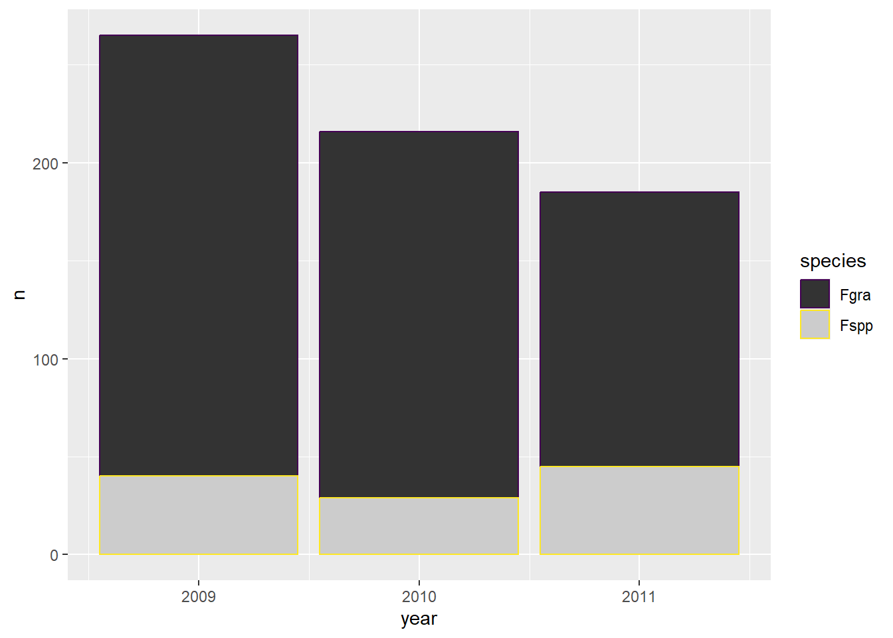
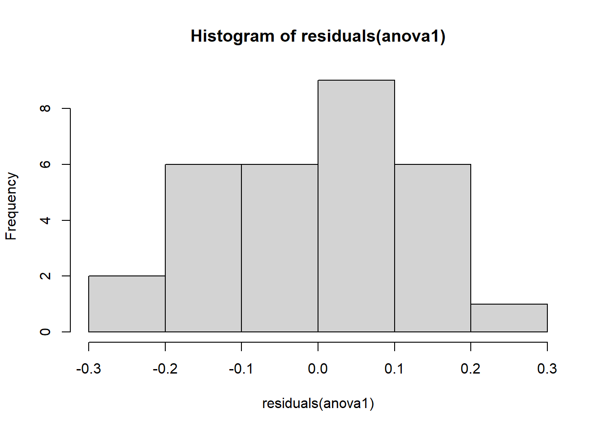
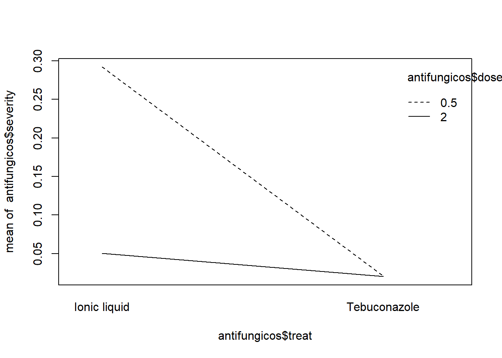

library(agricolae)
dates <- c(14,21,28)
severity <- c(40,80,90)3 Funcionalidades R

4 Pacotes no R
Os pacotes são conjuntos organizados de funções, dados e documentação que aprimora as funções básicas do programa R. São fundamentais para análises estatísticas, visualizalição de dados, dentre outras tarefas. As funções dos pacotes auxilia na determinação dos códigos, evitando que os mesmos sejam determinados do zero. Alguns pacotes fornecem dados para demonstração e prática do programa.

Os pacotes são disponibilizados por meio de repertórios. Os principais são:
- CRAN (Cpmprehensive R Archive Network): é o mais utilizado.
- Bioconductor: fornece pacotes para análises de dados genômicos e biológicos.
- GitHub: site que reune repositórios git que estão em desenvolvimento antes (ou em vez de) disponibiliza-los ao CRAN.
4.1 Principais pacotes R
Os principais pacotes R estão listados abaixo, bem como uma breve descrição sobre a sua funcionalidade.
4.1.1 Análise estatística em agricultura e experimentos
agricolae - Métodos estatísticos aplicados a experimentaão agrícola (ex: ANOVA, DIC, DBC, Scott-Knott).
epifitter - Fornece ajuste e comparação de curvas epidêmicas em fitopatologia.
ec50estimator - Estima a concentração eficaz (ex: CL50, CE50) para curvas dose-resposta (comum em toxicologia e ensaio de inseticidas)
drc - Modelagem de curvas dose-resposta.
4.1.2 Visualização de dados
ggplot2 - Confecção de gráficos.
ggpubr - Facilita a criação de gráficos para publicações (baseado no ggplot2) e adiciona testes estatísticos.
ggthemes - Adiciona temas aos gráficos gerados pelo ggplot2.
patchwork - Combina dois gráficos ggplot2 em uma figura.
ggspatial - Adiciona elementes cartográficos a mapas ggpplot2.
4.1.3 Importação e exportação de dados
readxl - Leitura de arquivos .xls e .xlsx.
writexl - Exporta os dados do R para planilha Excel (.xlsx).
gsheet - Leitura de planilhas disponíveis na nuvem (via URL).
4.1.4 Manipulação e limpeza de dados
tidyverse - Coleção de pacotes (inclui dplyr, ggplot2, tidyr, readr, purrr, tibble, etc.).
janitor - Limpeza de dados, especialmente tabelas (ex: remoção de colunas vazias, padronizar nomes de colunas, verificar duplicatas, etc.).
dt - Tabelas interativas em HTML para visualização de dados.
4.1.5 Estatística descritiva e inferencial
report - Gera relatórios para interpretação de modelos estatíticos.
rstatix - Realiza testes estatísticos (test t, ANOVA, post-hoc, correlações).
emmeans - Médias marginais estimadas (usado em análises pós-modelo).
multcomp - Comparações mútiplas de médias (ex: Tukey, Dunnett).
multcompView - Cria os agrupamentos significativos em relação a média.
mass - Modelos estatísticos e de regressão.
car - Ferramenta para regressão, testes de hipóteses e diagnóstico de modelos.
DHARMa - Diagnóstico de resíduos de modelos GLM/GLMM.
performance - Avalia e compara o desempenho de modelos estatísticos (ex: AIC).
4.1.6 Mapas e dados espaciais
rnaturalearth - Dados geográficos (países, estados, fronteiras).
rnaturalearthhires - Versão com alta resolução dos dados do rnaturalearth.
4.2 Instalação e carregamento dos pacotes
Antes de utilizar um pacote no R, é necessário a sua instalação. A instalação é realizada apenas uma vez, ficando disponível no sistema para uso futuro. Para instalação do pacote, utiliza-se a função install.packages().
Após a instalação, para utilizar um pacote no R, é necessário carregá-lo por meio da função library(). No chunk abaixo temos um exemplo de carregamento de um pacote, e criação de um vetor com base em dados inseridos manualmente.
dates[1] 14 21 28severity[1] 40 80 904.3 Funções e operadores importantes
As funções são blocos de código que executam tarefas específicas. As operações importantes no R são realizadas através de uma função. Os operadores são símbolos especiais que realizam funções básicas. Abaixo encontramos as principais funções e operadores utilizados no ambiente R.
4.3.1 Operadores e manipulação de objetos
<- : Operador de atribuição. Criação de objetos no R (vetores, data frames, funções, etc).
$ : Acesso a coluna de um data frame ou lista.
attach(): Acessa diretamente as colunas de dados pelo nome.
detach(): Desfaz o attach().
4.3.2 Manipulação de dados
|> : Pipe. Permite encadear funções de forma legível.
mutate(): Adiciona ou modifica colunas em um data frame.
group_by: Agrupa dados por uma ou mais variáveis para operações subsequentes.
count(): Conta ocorrências de combinações de variáveis.
filter(): Filtra linhas com base em condições.
select(): Seleciona colunas específicas.
pull(): Extrai uma coluna como vetor.
rbind(): Junta data frames por linhas.
pivot_winder(): Utilizado no pacote tidyr. Transforma dados de formato longo para formato largo.
tabyl(): Utilizado no pacote janitor. Cria tabelas de frequência de forma rápida e limpa.
gsheet2tbl(): Utilizado no pacote gsheet. Importa planilhas diretamente do Google Sheets.
4.3.3 Visualização de dados
plot(): Cria gráficos simples.
hist(): Cria histograma de uma variável numérica.
ggplot(): Utilizado no pacote ggplot2. Inicia a construção de gráficos mais complexos e detalhados.
interaction.plot(): Cria gráfico de interação entre dois fatores em relação a uma variável resposta.
qqnorm() e qqline(): Cria gráficos para avaliar a normalidade de resíduos.
pairs(): Gera uma matriz de diagramas de dispersão entre variáveis numéricas.
datatable(): Utilizado no pacote DT. Cria uma tabela interativa.
4.3.4 Estatística descritiva e testes
glimpse(): Utiizado no pacote dplyr. Visualiza estrutura resumida de um data frame.
Shapiro.test(): Teste de normalidade de Shapiro-Wilk.
var.test(): Compara variâncias entre dois grupos.
bartlett.test() e levene_test(): Testam homogeneidade de variâncias.
aov(): Realiza ANOVA (análise de variância).
anova(): Exibe resultados de modelos ajustados, como aov() ou lm().
lm(): Ajusta modelos lineares.
kruskal.test(): Teste não paramétrico para comparação de medianas entre grupos.
cor()ecor.test(): Calculam e testam correlações entre variáveis.
audpc(): Utilizado no pacote agricolae. Calcula a área abaixo da curva de progresso da doença (AUDPC).
4.3.5 Modelagem e bioestatística
simulateResiduals(): Utilizado no pacote DHARMa. Simula resíduos de modelos para verificação de suposições.
cv.model(): Função para cálculo de coeficiente de variação de modelos.
cld(): Utilizado no pacote multcompView. Gera letras para comparação de médias após testes como Tukey.
pwpm(): Utilizado no pacote emmeans. Matriz de comparação de médias par a par.
lme4: Pacote para modelos lineares mistos, usado com lmer().
boxcox(): Utilizado no pacote MASS. Encontra transformações adequadas para melhorar normalidade ou homocedasticidade.
confint(): Calcula intervalos de confiança para parâmetros de modelos.
summary(): Mostra um resumo estatístico de objetos no R, como modelos, vetores, data frames, etc.
4.3.6 Modelagem de dose-resposta
drm(): Ajusta modelos de dose-resposta.
aic(): Critério de informação de Akaike, usado para comparar modelos.
ed(): Calcula doses efetivas.
Abaixo e ao longo do capítulo temos a exemplificação dessas funções e operadores.
dados <- Orange
dadosGrouped Data: circumference ~ age | Tree
Tree age circumference
1 1 118 30
2 1 484 58
3 1 664 87
4 1 1004 115
5 1 1231 120
6 1 1372 142
7 1 1582 145
8 2 118 33
9 2 484 69
10 2 664 111
11 2 1004 156
12 2 1231 172
13 2 1372 203
14 2 1582 203
15 3 118 30
16 3 484 51
17 3 664 75
18 3 1004 108
19 3 1231 115
20 3 1372 139
21 3 1582 140
22 4 118 32
23 4 484 62
24 4 664 112
25 4 1004 167
26 4 1231 179
27 4 1372 209
28 4 1582 214
29 5 118 30
30 5 484 49
31 5 664 81
32 5 1004 125
33 5 1231 142
34 5 1372 174
35 5 1582 177dados2 <- dados
circ <- dados$circumference
circ [1] 30 58 87 115 120 142 145 33 69 111 156 172 203 203 30 51 75 108 115
[20] 139 140 32 62 112 167 179 209 214 30 49 81 125 142 174 177circ2 <- circ+10
circ2 [1] 40 68 97 125 130 152 155 43 79 121 166 182 213 213 40 61 85 118 125
[20] 149 150 42 72 122 177 189 219 224 40 59 91 135 152 184 187dados Grouped Data: circumference ~ age | Tree
Tree age circumference
1 1 118 30
2 1 484 58
3 1 664 87
4 1 1004 115
5 1 1231 120
6 1 1372 142
7 1 1582 145
8 2 118 33
9 2 484 69
10 2 664 111
11 2 1004 156
12 2 1231 172
13 2 1372 203
14 2 1582 203
15 3 118 30
16 3 484 51
17 3 664 75
18 3 1004 108
19 3 1231 115
20 3 1372 139
21 3 1582 140
22 4 118 32
23 4 484 62
24 4 664 112
25 4 1004 167
26 4 1231 179
27 4 1372 209
28 4 1582 214
29 5 118 30
30 5 484 49
31 5 664 81
32 5 1004 125
33 5 1231 142
34 5 1372 174
35 5 1582 177dados$logcirc <- log(dados$circumference)
dados$logcirc [1] 3.401197 4.060443 4.465908 4.744932 4.787492 4.955827 4.976734 3.496508
[9] 4.234107 4.709530 5.049856 5.147494 5.313206 5.313206 3.401197 3.931826
[17] 4.317488 4.682131 4.744932 4.934474 4.941642 3.465736 4.127134 4.718499
[25] 5.117994 5.187386 5.342334 5.365976 3.401197 3.891820 4.394449 4.828314
[33] 4.955827 5.159055 5.176150dados Grouped Data: circumference ~ age | Tree
Tree age circumference logcirc
1 1 118 30 3.401197
2 1 484 58 4.060443
3 1 664 87 4.465908
4 1 1004 115 4.744932
5 1 1231 120 4.787492
6 1 1372 142 4.955827
7 1 1582 145 4.976734
8 2 118 33 3.496508
9 2 484 69 4.234107
10 2 664 111 4.709530
11 2 1004 156 5.049856
12 2 1231 172 5.147494
13 2 1372 203 5.313206
14 2 1582 203 5.313206
15 3 118 30 3.401197
16 3 484 51 3.931826
17 3 664 75 4.317488
18 3 1004 108 4.682131
19 3 1231 115 4.744932
20 3 1372 139 4.934474
21 3 1582 140 4.941642
22 4 118 32 3.465736
23 4 484 62 4.127134
24 4 664 112 4.718499
25 4 1004 167 5.117994
26 4 1231 179 5.187386
27 4 1372 209 5.342334
28 4 1582 214 5.365976
29 5 118 30 3.401197
30 5 484 49 3.891820
31 5 664 81 4.394449
32 5 1004 125 4.828314
33 5 1231 142 4.955827
34 5 1372 174 5.159055
35 5 1582 177 5.176150dados$circumference [1] 30 58 87 115 120 142 145 33 69 111 156 172 203 203 30 51 75 108 115
[20] 139 140 32 62 112 167 179 209 214 30 49 81 125 142 174 177attach(dados)
circumference [1] 30 58 87 115 120 142 145 33 69 111 156 172 203 203 30 51 75 108 115
[20] 139 140 32 62 112 167 179 209 214 30 49 81 125 142 174 177detach(dados) audpc(severity, dates)evaluation
1015 data(corn)
str(corn)'data.frame': 34 obs. of 3 variables:
$ method : int 1 1 1 1 1 1 1 1 1 2 ...
$ observation: int 83 91 94 89 89 96 91 92 90 91 ...
$ rx : num 11 23 28.5 17 17 31.5 23 26 19.5 23 ...library(tidyverse)
dates <- c(7,14,21,28,35, 42)
severity <- c(0.1, 5, 10, 35, 50, 60)
data_curva <- data.frame(dates, severity)
data_curva dates severity
1 7 0.1
2 14 5.0
3 21 10.0
4 28 35.0
5 35 50.0
6 42 60.0plot(dados)
plot(dados$circumference)
data(corn)
str(corn)'data.frame': 34 obs. of 3 variables:
$ method : int 1 1 1 1 1 1 1 1 1 2 ...
$ observation: int 83 91 94 89 89 96 91 92 90 91 ...
$ rx : num 11 23 28.5 17 17 31.5 23 26 19.5 23 ...5 Dataframe
O data frame é uma das principais estruturas de dados no R, muito utilizado para armazenar e manipular dados tabulares. É semelhante a uma planilha Excel.
5.1 Importação de dados
A importação dos dados é uma das principais eatapas da análise de dados no R.
5.2 Formas de importação de dados
5.3 Dados R
O R possui conjuntos de dados interno, prontos para serem usados como exemplos, focado principalmente em testes e no aprendizado. Abaixo temos um exemplo de importação de um conjunto de dados que está disponível no R.
dados <- Orange
OrangeGrouped Data: circumference ~ age | Tree
Tree age circumference
1 1 118 30
2 1 484 58
3 1 664 87
4 1 1004 115
5 1 1231 120
6 1 1372 142
7 1 1582 145
8 2 118 33
9 2 484 69
10 2 664 111
11 2 1004 156
12 2 1231 172
13 2 1372 203
14 2 1582 203
15 3 118 30
16 3 484 51
17 3 664 75
18 3 1004 108
19 3 1231 115
20 3 1372 139
21 3 1582 140
22 4 118 32
23 4 484 62
24 4 664 112
25 4 1004 167
26 4 1231 179
27 4 1372 209
28 4 1582 214
29 5 118 30
30 5 484 49
31 5 664 81
32 5 1004 125
33 5 1231 142
34 5 1372 174
35 5 1582 177plot(dados)plot(dados$circumference)
5.4 Dados em formato Excel
Para importação dos dados em planilha do Excel do desktop é necessário ter instalado o pacote readxl, e utilizar a função read_excel.
library(readxl)
dados3 <- read_excel("dados-diversos.xlsx",
sheet = "sensibilidade_fungicidas")
dados3# A tibble: 240 × 7
code year trial state dose replicate germination
<chr> <dbl> <dbl> <chr> <chr> <dbl> <dbl>
1 FGT05 2007 1 RS 0 1 46
2 FGT05 2007 1 RS 0 2 44
3 FGT05 2007 1 RS 0.05 1 18
4 FGT05 2007 1 RS 0.05 2 24
5 FGT05 2007 1 RS 0.5 1 9
6 FGT05 2007 1 RS 0.5 2 11
7 FGT05 2007 1 RS 1 1 0
8 FGT05 2007 1 RS 1 2 0
9 FGT05 2007 1 RS 5 1 0
10 FGT05 2007 1 RS 5 2 0
# ℹ 230 more rowsread_excel("dados-diversos.xlsx",
sheet = "fungicida_vaso")# A tibble: 20 × 8
treat dose rep n_sp dis_sp n_seeds inf_seeds severity
<chr> <dbl> <dbl> <dbl> <dbl> <dbl> <dbl> <dbl>
1 Ionic liquid 0.5 1 103 13 25 10 0.126
2 Ionic liquid 0.5 2 125 31 25 12 0.248
3 Ionic liquid 0.5 3 210 80 25 12 0.381
4 Ionic liquid 0.5 4 97 28 25 10 0.289
5 Ionic liquid 0.5 5 180 75 25 11 0.417
6 Ionic liquid 2 2 116 9 25 6 0.0776
7 Ionic liquid 2 3 166 7 25 3 0.0422
8 Ionic liquid 2 4 157 12 25 1 0.0764
9 Ionic liquid 2 5 129 7 25 7 0.0543
10 Ionic liquid 2 1 84 0 25 1 0
11 Tebuconazole 0.5 1 121 0 25 2 0
12 Tebuconazole 0.5 2 123 6 25 5 0.0488
13 Tebuconazole 0.5 3 107 3 25 1 0.0280
14 Tebuconazole 0.5 4 90 0 25 2 0
15 Tebuconazole 0.5 5 142 4 25 1 0.0282
16 Tebuconazole 2 1 166 3 25 5 0.0181
17 Tebuconazole 2 2 120 0 25 2 0
18 Tebuconazole 2 3 100 4 25 2 0.04
19 Tebuconazole 2 4 96 3 25 0 0.0312
20 Tebuconazole 2 5 170 2 25 4 0.0118antifungicos <- read_excel("dados-diversos.xlsx",
sheet = "fungicida_vaso")
antifungicos# A tibble: 20 × 8
treat dose rep n_sp dis_sp n_seeds inf_seeds severity
<chr> <dbl> <dbl> <dbl> <dbl> <dbl> <dbl> <dbl>
1 Ionic liquid 0.5 1 103 13 25 10 0.126
2 Ionic liquid 0.5 2 125 31 25 12 0.248
3 Ionic liquid 0.5 3 210 80 25 12 0.381
4 Ionic liquid 0.5 4 97 28 25 10 0.289
5 Ionic liquid 0.5 5 180 75 25 11 0.417
6 Ionic liquid 2 2 116 9 25 6 0.0776
7 Ionic liquid 2 3 166 7 25 3 0.0422
8 Ionic liquid 2 4 157 12 25 1 0.0764
9 Ionic liquid 2 5 129 7 25 7 0.0543
10 Ionic liquid 2 1 84 0 25 1 0
11 Tebuconazole 0.5 1 121 0 25 2 0
12 Tebuconazole 0.5 2 123 6 25 5 0.0488
13 Tebuconazole 0.5 3 107 3 25 1 0.0280
14 Tebuconazole 0.5 4 90 0 25 2 0
15 Tebuconazole 0.5 5 142 4 25 1 0.0282
16 Tebuconazole 2 1 166 3 25 5 0.0181
17 Tebuconazole 2 2 120 0 25 2 0
18 Tebuconazole 2 3 100 4 25 2 0.04
19 Tebuconazole 2 4 96 3 25 0 0.0312
20 Tebuconazole 2 5 170 2 25 4 0.0118campo <- read_excel("dados-diversos.xlsx","fungicida_campo")
campo# A tibble: 32 × 5
TRAT BLOCO DFC FER PROD
<dbl> <dbl> <dbl> <dbl> <dbl>
1 1 1 10 17 4611.
2 1 2 10.5 21 4312.
3 1 3 12 25 4544.
4 1 4 11 18 3409.
5 2 1 6.2 6.5 5023.
6 2 2 6 4 4839.
7 2 3 7 8 4903.
8 2 4 6.5 5 4975.
9 3 1 6 6 5235.
10 3 2 6.2 3.5 5014.
# ℹ 22 more rowsmilho <- read_excel("dados-diversos.xlsx","milho")
milho# A tibble: 48 × 5
hybrid block method index yield
<chr> <dbl> <chr> <dbl> <dbl>
1 30F53 HX 1 pin 21.1 12920
2 30F53 HX 2 pin 21.1 9870
3 30F53 HX 3 pin 23.3 8920
4 30F53 HX 4 pin 35.6 13120
5 30F53 YH 1 pin 21.1 12060
6 30F53 YH 2 pin 22.2 7860
7 30F53 YH 3 pin 27.3 7410
8 30F53 YH 4 pin 27.8 10300
9 30K64 1 pin 20.0 11700
10 30K64 2 pin 20.0 10700
# ℹ 38 more rows5.5 Dados em formato CSV
Para importação dos dados em planilha CSV do desktop é utilizada a função read_csv.
curve <- read_csv("curve.csv")5.6 Dados no formato Google Sheets
Para importação dos dados de planilha do Google Sheets é necessário ter instalado o pacote gsheet, e utilizar a função gsheet2tbl.
library(gsheet)
dados_mg <- gsheet2tbl("https://docs.google.com/spreadsheets/d/1bq2N19DcZdtax2fQW9OHSGMR0X2__Z9T/edit?gid=983033137#gid=983033137")
dados_mg# A tibble: 20 × 3
trat rep comp
<chr> <dbl> <dbl>
1 Mg2 1 9
2 Mg2 2 12.5
3 Mg2 3 10
4 Mg2 4 8
5 Mg2 5 13.2
6 Mg2 6 11
7 Mg2 7 10.8
8 Mg2 8 9.5
9 Mg2 9 10.8
10 Mg2 10 10.4
11 control 1 13.7
12 control 2 15.9
13 control 3 15.7
14 control 4 14.2
15 control 5 15.9
16 control 6 16.5
17 control 7 18
18 control 8 14.4
19 control 9 16.4
20 control 10 16 survey <- gsheet2tbl("https://docs.google.com/spreadsheets/d/1bq2N19DcZdtax2fQW9OHSGMR0X2__Z9T/edit?gid=1118819738#gid=1118819738")
survey# A tibble: 666 × 6
year state residue inc inc_class species
<dbl> <chr> <chr> <dbl> <chr> <chr>
1 2011 RS soybean 1 low Fgra
2 2011 RS soybean 1 low Fgra
3 2011 RS soybean 1 low Fgra
4 2011 RS soybean 1 low Fgra
5 2011 RS soybean 1 low Fgra
6 2011 RS soybean 1 low Fgra
7 2011 RS corn 1 low Fgra
8 2010 RS soybean 2 low Fspp
9 2010 RS corn 2 low Fgra
10 2011 RS soybean 2 low Fgra
# ℹ 656 more rowsmg <- gsheet2tbl("https://docs.google.com/spreadsheets/d/1bq2N19DcZdtax2fQW9OHSGMR0X2__Z9T/edit?gid=983033137#gid=983033137")
mg# A tibble: 20 × 3
trat rep comp
<chr> <dbl> <dbl>
1 Mg2 1 9
2 Mg2 2 12.5
3 Mg2 3 10
4 Mg2 4 8
5 Mg2 5 13.2
6 Mg2 6 11
7 Mg2 7 10.8
8 Mg2 8 9.5
9 Mg2 9 10.8
10 Mg2 10 10.4
11 control 1 13.7
12 control 2 15.9
13 control 3 15.7
14 control 4 14.2
15 control 5 15.9
16 control 6 16.5
17 control 7 18
18 control 8 14.4
19 control 9 16.4
20 control 10 16 micelial <- gsheet2tbl("https://docs.google.com/spreadsheets/d/1bq2N19DcZdtax2fQW9OHSGMR0X2__Z9T/edit?gid=959387827#gid=959387827")
micelial# A tibble: 30 × 3
especie rep tcm
<chr> <dbl> <dbl>
1 Fasi 1 1.5
2 Fasi 2 1.59
3 Fasi 3 1.52
4 Fasi 4 1.52
5 Fasi 5 1.6
6 Fasi 6 1.7
7 Faus 1 1.52
8 Faus 2 1.25
9 Faus 3 1.27
10 Faus 4 1.3
# ℹ 20 more rowsdat_mg <- gsheet2tbl("https://docs.google.com/spreadsheets/d/1bq2N19DcZdtax2fQW9OHSGMR0X2__Z9T/edit?gid=983033137#gid=983033137")
dat_mg# A tibble: 20 × 3
trat rep comp
<chr> <dbl> <dbl>
1 Mg2 1 9
2 Mg2 2 12.5
3 Mg2 3 10
4 Mg2 4 8
5 Mg2 5 13.2
6 Mg2 6 11
7 Mg2 7 10.8
8 Mg2 8 9.5
9 Mg2 9 10.8
10 Mg2 10 10.4
11 control 1 13.7
12 control 2 15.9
13 control 3 15.7
14 control 4 14.2
15 control 5 15.9
16 control 6 16.5
17 control 7 18
18 control 8 14.4
19 control 9 16.4
20 control 10 16 escala <- gsheet2tbl("https://docs.google.com/spreadsheets/d/1bq2N19DcZdtax2fQW9OHSGMR0X2__Z9T/edit?gid=1729131173#gid=1729131173")
escala# A tibble: 20 × 7
assessment rater acuracia precisao vies_geral vies_sistematico vies_constante
<chr> <chr> <dbl> <dbl> <dbl> <dbl> <dbl>
1 Unaided A 0.81 0.83 0.98 1.19 0.11
2 Unaided B 0.72 0.73 0.99 0.92 -0.11
3 Unaided C 0.4 0.71 0.78 1.16 0.73
4 Unaided D 0.82 0.82 1 0.95 -0.01
5 Unaided E 0.75 0.75 0.99 1.1 0.07
6 Unaided F 0.45 0.75 0.92 0.8 0.34
7 Unaided G 0.81 0.82 0.98 1.16 0.13
8 Unaided H 0.78 0.87 0.9 1.07 -0.47
9 Unaided I 0.78 0.79 0.99 1.14 0.09
10 Unaided J 0.5 0.83 0.74 0.65 -0.72
11 Aided1 A 0.91 0.95 0.96 0.89 -0.28
12 Aided1 B 0.91 0.96 0.95 0.89 -0.3
13 Aided1 C 0.91 0.96 0.95 1.28 0.21
14 Aided1 D 0.96 0.97 0.99 1.14 0.09
15 Aided1 E 0.96 0.96 1 1 -0.1
16 Aided1 F 0.9 0.97 0.93 0.86 -0.36
17 Aided1 G 0.85 0.95 0.89 0.83 -0.45
18 Aided1 H 0.88 0.97 0.9 1.29 0.38
19 Aided1 I 0.95 0.96 0.99 1.14 0.07
20 Aided1 J 0.94 0.96 0.99 0.91 -0.13micelial <- gsheet2tbl("https://docs.google.com/spreadsheets/d/1bq2N19DcZdtax2fQW9OHSGMR0X2__Z9T/edit?gid=959387827#gid=959387827")
micelial# A tibble: 30 × 3
especie rep tcm
<chr> <dbl> <dbl>
1 Fasi 1 1.5
2 Fasi 2 1.59
3 Fasi 3 1.52
4 Fasi 4 1.52
5 Fasi 5 1.6
6 Fasi 6 1.7
7 Faus 1 1.52
8 Faus 2 1.25
9 Faus 3 1.27
10 Faus 4 1.3
# ℹ 20 more rowsestande <- gsheet2tbl("https://docs.google.com/spreadsheets/d/1bq2N19DcZdtax2fQW9OHSGMR0X2__Z9T/edit?gid=401662555#gid=401662555")
estande# A tibble: 72 × 4
exp trat bloco nplants
<dbl> <dbl> <dbl> <dbl>
1 1 0 1 66
2 1 0 2 72
3 1 0 3 50
4 1 0 4 27
5 1 3 1 68
6 1 3 2 79
7 1 3 3 31
8 1 3 4 32
9 1 6 1 58
10 1 6 2 56
# ℹ 62 more rowsfungi <- gsheet2tbl("https://docs.google.com/spreadsheets/d/1bq2N19DcZdtax2fQW9OHSGMR0X2__Z9T/edit?gid=465348652#gid=465348652")
fungi# A tibble: 240 × 9
code year trial state dose replicate germination ...8 ...9
<chr> <dbl> <dbl> <chr> <dbl> <dbl> <dbl> <lgl> <lgl>
1 FGT05 2007 1 RS 0 1 46 NA NA
2 FGT05 2007 1 RS 0 2 44 NA NA
3 FGT05 2007 1 RS 0.05 1 18 NA NA
4 FGT05 2007 1 RS 0.05 2 24 NA NA
5 FGT05 2007 1 RS 0.5 1 9 NA NA
6 FGT05 2007 1 RS 0.5 2 11 NA NA
7 FGT05 2007 1 RS 1 1 0 NA NA
8 FGT05 2007 1 RS 1 2 0 NA NA
9 FGT05 2007 1 RS 5 1 0 NA NA
10 FGT05 2007 1 RS 5 2 0 NA NA
# ℹ 230 more rows5.7 Salvar planilha do R
Para salvar dados do R no formato Excel é utilizado a função write_xlsx. Já para salvar no formato csv é utilizado a função write_csv.
library(writexl)
write_xlsx(curve, "curva2.xlsx")
write_csv(curve, "curve2.csv")5.8 Manipulação dos dados importados
Os dados inseridos no R para melhor análise podem ser organizados, transformados e preparados de acordo com a sua finalidade.
- Resumo dos dados contando quantas vezes eles aparecem
survey |>
group_by(state, residue) |>
count()# A tibble: 3 × 3
# Groups: state, residue [3]
state residue n
<chr> <chr> <int>
1 PR <NA> 216
2 RS corn 169
3 RS soybean 281- Separa os dados
RS <- survey |>
filter(state == "RS")
PR <- survey |>
filter(state == "PR")- Reúne subconjuntos de dados em um único conjunto
combinado <- rbind(RS, PR)- Redução da dimensão dos dados
survey_b <- survey |>
dplyr::select(year, state, species)- União de funções para organização dos dados
survey_2009 <- survey |>
dplyr::select(year, state, species) |>
filter(year == 2009)- Resume e explora rapidamente a distribuição de categorias nos dados
library(janitor)
survey_b |>
tabyl(year,species) year Fgra Fspp
2009 225 40
2010 187 29
2011 140 45- Reestrutura os dados
library(tidyverse)
dat_mg2 <- dat_mg |>
pivot_wider(names_from = trat, values_from = comp) |>
select(-rep)
dat_mg2# A tibble: 10 × 2
Mg2 control
<dbl> <dbl>
1 9 13.7
2 12.5 15.9
3 10 15.7
4 8 14.2
5 13.2 15.9
6 11 16.5
7 10.8 18
8 9.5 14.4
9 10.8 16.4
10 10.4 16 6 Gráficos em R
6.1 Visualização de dados em GGPLOT
O ggplot2 é o principal pacote para criação de gráficos no R. Utiliza a função geom_ que define o tipo de gráfico. É possível adicionar aos gráficos personalizações, a fim de torná-los mais apresentáveis. Abaixo segue algumas funções geom_.
data_curva |>
mutate(severity2 = c(1, 10, 35, 58, 70, 79)) |>
ggplot(aes(dates, severity2))+
geom_col()+
#geom_area(fill = "blue")+
geom_line(linewidth = 2, color = "black")+
geom_point(size = 4, color = "black")+
theme_bw(base_size = 14)+
labs(x = "Dia após o plantio",
y = "Severidade (%)")+
scale_y_continuous(limits = c(0, 100), n.breaks = 10) +
scale_x_continuous(n.breaks = 8)data_curva |>
mutate(severity2 = c(1, 10, 35, 58, 70, 79)) |>
ggplot(aes(dates, severity2))+
geom_col()+
geom_area(fill = "blue")+
geom_line(linewidth = 2, color = "black")+
geom_point(size = 4, color = "black")+
theme_bw(base_size = 14)+
labs(x = "Dia após o plantio",
y = "Severidade (%)")+
scale_y_continuous(limits = c(0, 100), n.breaks = 10) +
scale_x_continuous(n.breaks = 8)No ggplot2 há a função facet_wrap() que faz a divisão do gráfico em vários painéis.
survey_b |>
group_by(year, species) |>
count() |>
ggplot(aes(species,n))+
geom_col()+
facet_wrap(~year)
survey_b |>
group_by(year, species) |>
count() |>
ggplot(aes(year,n, fill = species,
color = species))+
geom_col()+
#scale_fill_manual(values = c("red", "blue"))+
#scale_fill_grey()+
scale_color_viridis_d()
# facet_wrap(~year)survey_b |>
group_by(year, species) |>
count() |>
ggplot(aes(year,n, fill = species,
color = species))+
geom_col()+
scale_fill_manual(values = c("red", "blue"))+
#scale_fill_grey()+
scale_color_viridis_d()# facet_wrap(~year)survey_b |>
group_by(year, species) |>
count() |>
ggplot(aes(year,n, fill = species,
color = species))+
geom_col()+
#scale_fill_manual(values = c("red", "blue"))+
scale_fill_grey()+
scale_color_viridis_d()
# facet_wrap(~year)survey_b |>
group_by(year, species) |>
count() |>
ggplot(aes(year,n, fill = species,
color = species))+
geom_col()+
#scale_fill_manual(values = c("red", "blue"))+
#scale_fill_grey()+
scale_color_viridis_d()+
facet_wrap(~year)library(ggthemes)
plot_mg <- mg |>
ggplot(aes(trat, comp))+
geom_boxplot(fill = "grey",
outlier.colour = NA)+
geom_jitter(width = 0.1, color = "grey20")+
scale_y_continuous(limits = c(5,20))+
labs(x = "Tratamento",
y = "Comprimento (mm)")+
theme_minimal()
plot_mgplot_micelial <- micelial |>
ggplot(aes(reorder(especie, tcm),tcm))+
geom_boxplot(fill = "darkgreen",
outlier.colour = NA)+
geom_jitter(width = 0.1, color = "grey20")+
scale_y_continuous(limits = c(0,2))+
labs(x = "", y = "Taxa de crescimento micelial (mm/dia)")+
theme_minimal()+
coord_flip()
plot_micelialdat_mg# A tibble: 20 × 3
trat rep comp
<chr> <dbl> <dbl>
1 Mg2 1 9
2 Mg2 2 12.5
3 Mg2 3 10
4 Mg2 4 8
5 Mg2 5 13.2
6 Mg2 6 11
7 Mg2 7 10.8
8 Mg2 8 9.5
9 Mg2 9 10.8
10 Mg2 10 10.4
11 control 1 13.7
12 control 2 15.9
13 control 3 15.7
14 control 4 14.2
15 control 5 15.9
16 control 6 16.5
17 control 7 18
18 control 8 14.4
19 control 9 16.4
20 control 10 16 dat_mg |>
ggplot(aes(trat,comp))+
geom_jitter(width = 0.1)Pode ser construido gráficos para visualização de diferenças entre grupos, distribuições e outliers. Assim como exemplicado no chunck abaixo.
library(ggpubr)
p <- ggboxplot(
dat_mg, x = "trat", y = "comp",
color = "trat", palette = "jco")
p
Após realização de análises estatísticas para comparar médias entre grupos, como o teste t pode inserir o p-valor ao gráfico.
library(rstatix)
test <- t_test(comp ~ trat, data = dat_mg)
test# A tibble: 1 × 8
.y. group1 group2 n1 n2 statistic df p
* <chr> <chr> <chr> <int> <int> <dbl> <dbl> <dbl>
1 comp control Mg2 10 10 8.15 17.4 0.000000242p + stat_pvalue_manual(test, label = "p",
y.position = 18)+
ylim(0,20)+
labs(x = "Tratamento",
y = "Comprimento da lesão (mm)")6.2 Combinando gráficos
Os gráficos criados podem ser colocados um ao lado do outro, a fim de comparar mais facilmente os dados.
library(patchwork)
(plot_mg | plot_micelial) +
plot_annotation(tag_levels = "a")6.3 Salvando gráficos
Os gráficos confeccionados podem ser exportados em diferentes extensões e dimensões.
ggsave("box.png", bg = "white", width = 5,
height = 5)
ggsave("comb.png", bg = "white",
width = 8, height = 4)
ggsave("plot2.png", bg = "white") 7 Análises estatísticas em R
7.1 Teste t
O teste t é um dos testes estatísticos mais fundamentais e amplamente utilizados para comparar as médias de um ou dois grupos. Ele é um teste paramétrico, o que significa que ele faz certas suposições sobre a distribuição dos dados. Para que os resultados do teste t sejam válidos, algumas premissas devem ser atendidas:
Normalidade
Independência das observações
Homogeneidade das variâncias (apenas para o teste t duas amostras independentes)
attach(dat_mg2)
t_results <- t.test(control, Mg2,
var.equal = FALSE)
library(report)
report(t_results)Effect sizes were labelled following Cohen's (1988) recommendations.
The Welch Two Sample t-test testing the difference between control and Mg2
(mean of x = 15.68, mean of y = 10.52) suggests that the effect is positive,
statistically significant, and large (difference = 5.16, 95% CI [3.83, 6.49],
t(17.35) = 8.15, p < .001; Cohen's d = 3.65, 95% CI [2.14, 5.12])library(rstatix)
test <- t_test(comp ~ trat, data = dat_mg)
test# A tibble: 1 × 8
.y. group1 group2 n1 n2 statistic df p
* <chr> <chr> <chr> <int> <int> <dbl> <dbl> <dbl>
1 comp control Mg2 10 10 8.15 17.4 0.0000002427.1.1 Teste de normalidade dos dados
Teste de Shapiro-Wilk: Este é um dos testes de normalidade mais recomendados, especialmente para amostras pequenas a moderadas (n < 5000).
Hipótese Nula (H0): Os dados são normalmente distribuídos.
Hipótese Alternativa (Ha): Os dados não são normalmente distribuídos.
shapiro.test(Mg2)
Shapiro-Wilk normality test
data: Mg2
W = 0.97269, p-value = 0.9146shapiro.test(control)
Shapiro-Wilk normality test
data: control
W = 0.93886, p-value = 0.5404hist(dat_mg2$Mg2)hist(control)
var.test(dat_mg2$Mg2,
dat_mg2$control)
F test to compare two variances
data: dat_mg2$Mg2 and dat_mg2$control
F = 1.4781, num df = 9, denom df = 9, p-value = 0.5698
alternative hypothesis: true ratio of variances is not equal to 1
95 percent confidence interval:
0.3671417 5.9508644
sample estimates:
ratio of variances
1.478111 7.2 Teste t para amostras dependentes
O Teste t para amostras dependentes, também conhecido como Teste t Pareado ou Teste t para amostras relacionadas, é utilizado quando você quer comparar as médias de duas medições que vêm dos mesmos sujeitos ou de pares combinados. A chave aqui é a dependência entre as duas amostras. O teste t pareado tem algumas premissas:
Independência dos pares
Normalidade das diferenças
Escala de intervalo/razão
7.2.1 Exemplo 1
escala# A tibble: 20 × 7
assessment rater acuracia precisao vies_geral vies_sistematico vies_constante
<chr> <chr> <dbl> <dbl> <dbl> <dbl> <dbl>
1 Unaided A 0.81 0.83 0.98 1.19 0.11
2 Unaided B 0.72 0.73 0.99 0.92 -0.11
3 Unaided C 0.4 0.71 0.78 1.16 0.73
4 Unaided D 0.82 0.82 1 0.95 -0.01
5 Unaided E 0.75 0.75 0.99 1.1 0.07
6 Unaided F 0.45 0.75 0.92 0.8 0.34
7 Unaided G 0.81 0.82 0.98 1.16 0.13
8 Unaided H 0.78 0.87 0.9 1.07 -0.47
9 Unaided I 0.78 0.79 0.99 1.14 0.09
10 Unaided J 0.5 0.83 0.74 0.65 -0.72
11 Aided1 A 0.91 0.95 0.96 0.89 -0.28
12 Aided1 B 0.91 0.96 0.95 0.89 -0.3
13 Aided1 C 0.91 0.96 0.95 1.28 0.21
14 Aided1 D 0.96 0.97 0.99 1.14 0.09
15 Aided1 E 0.96 0.96 1 1 -0.1
16 Aided1 F 0.9 0.97 0.93 0.86 -0.36
17 Aided1 G 0.85 0.95 0.89 0.83 -0.45
18 Aided1 H 0.88 0.97 0.9 1.29 0.38
19 Aided1 I 0.95 0.96 0.99 1.14 0.07
20 Aided1 J 0.94 0.96 0.99 0.91 -0.13t_test(acuracia ~ assessment,
data = escala,
paired = TRUE)# A tibble: 1 × 8
.y. group1 group2 n1 n2 statistic df p
* <chr> <chr> <chr> <int> <int> <dbl> <dbl> <dbl>
1 acuracia Aided1 Unaided 10 10 4.42 9 0.00167escala |>
ggplot(aes(assessment, acuracia))+
geom_boxplot()
7.2.2 Exemplo 2
unaided <- escala |>
filter(assessment == "Unaided") |>
select(acuracia) |>
pull ()
unaided [1] 0.81 0.72 0.40 0.82 0.75 0.45 0.81 0.78 0.78 0.50aided <- escala |>
filter(assessment == "Aided1") |>
select(acuracia) |>
pull()
aided [1] 0.91 0.91 0.91 0.96 0.96 0.90 0.85 0.88 0.95 0.94var.test(unaided,aided)
F test to compare two variances
data: unaided and aided
F = 20.978, num df = 9, denom df = 9, p-value = 0.000106
alternative hypothesis: true ratio of variances is not equal to 1
95 percent confidence interval:
5.210754 84.459185
sample estimates:
ratio of variances
20.97847 hist(unaided)
shapiro.test(unaided)
Shapiro-Wilk normality test
data: unaided
W = 0.7748, p-value = 0.007155shapiro.test(aided)
Shapiro-Wilk normality test
data: aided
W = 0.92852, p-value = 0.4335t.test(unaided, aided, paired = TRUE,
var.equal = FALSE)
Paired t-test
data: unaided and aided
t = -4.4214, df = 9, p-value = 0.001668
alternative hypothesis: true mean difference is not equal to 0
95 percent confidence interval:
-0.3552353 -0.1147647
sample estimates:
mean difference
-0.235 7.3 Teste de Wilcoxon
O teste de Wilcoxon tem o objetivo de comparar se duas amostras independentess vêm da mesma população ou de populações com medianas (ou distribuições) diferentes. É a alternativa não paramétrica ao teste t de duas amostras independentes.
Hipóteses:
Hipótese Nula (H0): As distribuições das duas populações são as mesmas (ou as medianas são iguais).
Hipótese Alternativa (Ha): As distribuições das duas populações são diferentes (ou as medianas são diferentes).
wilcox.test(unaided, aided, paired = FALSE)
Wilcoxon rank sum test with continuity correction
data: unaided and aided
W = 0, p-value = 0.0001756
alternative hypothesis: true location shift is not equal to 07.4 Análise de variância - ANOVA
A análise de variância (ANOVA) é um teste estatístico paramétrico utilizado para comparar as médias de três ou mais grupos independentes simultaneamente.
micelial# A tibble: 30 × 3
especie rep tcm
<chr> <dbl> <dbl>
1 Fasi 1 1.5
2 Fasi 2 1.59
3 Fasi 3 1.52
4 Fasi 4 1.52
5 Fasi 5 1.6
6 Fasi 6 1.7
7 Faus 1 1.52
8 Faus 2 1.25
9 Faus 3 1.27
10 Faus 4 1.3
# ℹ 20 more rowsmicelial |>
ggplot(aes(especie, tcm))+
geom_boxplot(oulier.colour = NA)+
geom_jitter(width = 0.1)anova1 <- aov(tcm ~especie, data = micelial)
anova1Call:
aov(formula = tcm ~ especie, data = micelial)
Terms:
especie Residuals
Sum of Squares 1.4695800 0.4679167
Deg. of Freedom 4 25
Residual standard error: 0.1368089
Estimated effects may be unbalancedanova2 <- lm(tcm ~ especie, data = micelial)
anova2
Call:
lm(formula = tcm ~ especie, data = micelial)
Coefficients:
(Intercept) especieFaus especieFcor especieFgra especieFmer
1.572 -0.335 -0.250 -0.660 -0.145 anova(anova1)Analysis of Variance Table
Response: tcm
Df Sum Sq Mean Sq F value Pr(>F)
especie 4 1.46958 0.36739 19.629 2.028e-07 ***
Residuals 25 0.46792 0.01872
---
Signif. codes: 0 '***' 0.001 '**' 0.01 '*' 0.05 '.' 0.1 ' ' 1anova(anova2)Analysis of Variance Table
Response: tcm
Df Sum Sq Mean Sq F value Pr(>F)
especie 4 1.46958 0.36739 19.629 2.028e-07 ***
Residuals 25 0.46792 0.01872
---
Signif. codes: 0 '***' 0.001 '**' 0.01 '*' 0.05 '.' 0.1 ' ' 17.4.1 Premissas da ANOVA
Para que os resultados da ANOVA sejam válidos, algumas premissas devem ser atendidas:
Independência das observações
Normalidade
Homogeneidade das variâncias
hist(residuals(anova1))
shapiro.test(residuals(anova1))
Shapiro-Wilk normality test
data: residuals(anova1)
W = 0.9821, p-value = 0.8782bartlett.test(tcm ~ especie, data = micelial)
Bartlett test of homogeneity of variances
data: tcm by especie
Bartlett's K-squared = 4.4367, df = 4, p-value = 0.3501levene_test(tcm ~ especie, data = micelial)# A tibble: 1 × 4
df1 df2 statistic p
<int> <int> <dbl> <dbl>
1 4 25 1.76 0.1697.4.2 Comparações entre grupos
Para identificar diferenças entre pares de grupos, precisamos realizar comparações múltiplas.
library(emmeans)
m <- emmeans(anova2, ~ especie)
m especie emmean SE df lower.CL upper.CL
Fasi 1.572 0.0559 25 1.457 1.69
Faus 1.237 0.0559 25 1.122 1.35
Fcor 1.322 0.0559 25 1.207 1.44
Fgra 0.912 0.0559 25 0.797 1.03
Fmer 1.427 0.0559 25 1.312 1.54
Confidence level used: 0.95 library(multcomp)
library(multcompView)
cld(m) especie emmean SE df lower.CL upper.CL .group
Fgra 0.912 0.0559 25 0.797 1.03 1
Faus 1.237 0.0559 25 1.122 1.35 2
Fcor 1.322 0.0559 25 1.207 1.44 2
Fmer 1.427 0.0559 25 1.312 1.54 23
Fasi 1.572 0.0559 25 1.457 1.69 3
Confidence level used: 0.95
P value adjustment: tukey method for comparing a family of 5 estimates
significance level used: alpha = 0.05
NOTE: If two or more means share the same grouping symbol,
then we cannot show them to be different.
But we also did not show them to be the same. pairs(m) contrast estimate SE df t.ratio p.value
Fasi - Faus 0.335 0.079 25 4.241 0.0023
Fasi - Fcor 0.250 0.079 25 3.165 0.0302
Fasi - Fgra 0.660 0.079 25 8.356 <.0001
Fasi - Fmer 0.145 0.079 25 1.836 0.3765
Faus - Fcor -0.085 0.079 25 -1.076 0.8169
Faus - Fgra 0.325 0.079 25 4.115 0.0031
Faus - Fmer -0.190 0.079 25 -2.405 0.1469
Fcor - Fgra 0.410 0.079 25 5.191 0.0002
Fcor - Fmer -0.105 0.079 25 -1.329 0.6761
Fgra - Fmer -0.515 0.079 25 -6.520 <.0001
P value adjustment: tukey method for comparing a family of 5 estimates pwpm(m) Fasi Faus Fcor Fgra Fmer
Fasi [1.572] 0.0023 0.0302 <.0001 0.3765
Faus 0.335 [1.237] 0.8169 0.0031 0.1469
Fcor 0.250 -0.085 [1.322] 0.0002 0.6761
Fgra 0.660 0.325 0.410 [0.912] <.0001
Fmer 0.145 -0.190 -0.105 -0.515 [1.427]
Row and column labels: especie
Upper triangle: P values adjust = "tukey"
Diagonal: [Estimates] (emmean)
Lower triangle: Comparisons (estimate) earlier vs. later7.5 Exemplo completo
Abaixo se encontra um exemplo completo de uma análise completa utlizando conjunto de dados do R.
insetos <- InsectSprays
insetos count spray
1 10 A
2 7 A
3 20 A
4 14 A
5 14 A
6 12 A
7 10 A
8 23 A
9 17 A
10 20 A
11 14 A
12 13 A
13 11 B
14 17 B
15 21 B
16 11 B
17 16 B
18 14 B
19 17 B
20 17 B
21 19 B
22 21 B
23 7 B
24 13 B
25 0 C
26 1 C
27 7 C
28 2 C
29 3 C
30 1 C
31 2 C
32 1 C
33 3 C
34 0 C
35 1 C
36 4 C
37 3 D
38 5 D
39 12 D
40 6 D
41 4 D
42 3 D
43 5 D
44 5 D
45 5 D
46 5 D
47 2 D
48 4 D
49 3 E
50 5 E
51 3 E
52 5 E
53 3 E
54 6 E
55 1 E
56 1 E
57 3 E
58 2 E
59 6 E
60 4 E
61 11 F
62 9 F
63 15 F
64 22 F
65 15 F
66 16 F
67 13 F
68 10 F
69 26 F
70 26 F
71 24 F
72 13 Finsetos |>
ggplot(aes(spray, count))+
geom_boxplot(outlier.colour = NA)+
geom_jitter(width = 0.1)bartlett.test(sqrt(count) ~ spray, data = insetos)
Bartlett test of homogeneity of variances
data: sqrt(count) by spray
Bartlett's K-squared = 3.7525, df = 5, p-value = 0.5856m2 <- lm(sqrt(count) ~ spray, data = insetos)hist(residuals(m2))
shapiro.test(residuals(m2))
Shapiro-Wilk normality test
data: residuals(m2)
W = 0.98721, p-value = 0.6814qqnorm(residuals(m2))
qqline(residuals(m2))
library(performance)
check_model(m2)library(DHARMa)
plot(simulateResiduals(m2))
7.6 Alternativas para dados que violam os pressupostos
7.6.1 Transformação da resposta
A transformação de dados é o processo de aplicar uma função matemática a uma variável em seu conjunto de dados. O objetivo principal é alterar a forma da distribuição da variável para torná-la mais adequada para certas análises estatísticas. Um exemplo de transformação é a raiz quadrada (sqrt()), que é muito utilizado para dados de contagem.
m3 <- lm(sqrt(count) ~ spray, data = insetos)hist(residuals(m3))
shapiro.test(residuals(m3))
Shapiro-Wilk normality test
data: residuals(m3)
W = 0.98721, p-value = 0.6814qqnorm(residuals(m3))
qqline(residuals(m3))
anova(m3)Analysis of Variance Table
Response: sqrt(count)
Df Sum Sq Mean Sq F value Pr(>F)
spray 5 88.438 17.6876 44.799 < 2.2e-16 ***
Residuals 66 26.058 0.3948
---
Signif. codes: 0 '***' 0.001 '**' 0.01 '*' 0.05 '.' 0.1 ' ' 1m33 <- emmeans(m3, ~spray, type = "response")
m33 spray response SE df lower.CL upper.CL
A 14.14 1.360 66 11.550 17.00
B 15.03 1.410 66 12.352 17.97
C 1.55 0.452 66 0.779 2.58
D 4.68 0.785 66 3.248 6.38
E 3.27 0.656 66 2.095 4.72
F 16.15 1.460 66 13.370 19.19
Confidence level used: 0.95
Intervals are back-transformed from the sqrt scale cld(m33) spray response SE df lower.CL upper.CL .group
C 1.55 0.452 66 0.779 2.58 1
E 3.27 0.656 66 2.095 4.72 12
D 4.68 0.785 66 3.248 6.38 2
A 14.14 1.360 66 11.550 17.00 3
B 15.03 1.410 66 12.352 17.97 3
F 16.15 1.460 66 13.370 19.19 3
Confidence level used: 0.95
Intervals are back-transformed from the sqrt scale
Note: contrasts are still on the sqrt scale. Consider using
regrid() if you want contrasts of back-transformed estimates.
P value adjustment: tukey method for comparing a family of 6 estimates
significance level used: alpha = 0.05
NOTE: If two or more means share the same grouping symbol,
then we cannot show them to be different.
But we also did not show them to be the same. plot(m33)
7.6.1.1 Box cox
Box cox é uma família de transformação de dados que inclui a logarítmica e a raiz quadrada como casos especiais. Inclui transformações de potência que é parametrizada por lambda.
library(MASS)
insects <- InsectSprays
insects count spray
1 10 A
2 7 A
3 20 A
4 14 A
5 14 A
6 12 A
7 10 A
8 23 A
9 17 A
10 20 A
11 14 A
12 13 A
13 11 B
14 17 B
15 21 B
16 11 B
17 16 B
18 14 B
19 17 B
20 17 B
21 19 B
22 21 B
23 7 B
24 13 B
25 0 C
26 1 C
27 7 C
28 2 C
29 3 C
30 1 C
31 2 C
32 1 C
33 3 C
34 0 C
35 1 C
36 4 C
37 3 D
38 5 D
39 12 D
40 6 D
41 4 D
42 3 D
43 5 D
44 5 D
45 5 D
46 5 D
47 2 D
48 4 D
49 3 E
50 5 E
51 3 E
52 5 E
53 3 E
54 6 E
55 1 E
56 1 E
57 3 E
58 2 E
59 6 E
60 4 E
61 11 F
62 9 F
63 15 F
64 22 F
65 15 F
66 16 F
67 13 F
68 10 F
69 26 F
70 26 F
71 24 F
72 13 Fm1 <- lm(count ~ spray, data = insects)library(DHARMa)
plot(simulateResiduals(m1))
boxcox(lm(insects$count + 0.1 ~ 1))
b <- boxcox(lm(insects$count + 0.1 ~ 1))
lambda <- b$x[which.max(b$y)]
lambda[1] 0.4242424library(tidyverse)
Insects <- insects |>
mutate(count = as.numeric(count),
count3 = sqrt(count))
Insects count spray count3
1 10 A 3.162278
2 7 A 2.645751
3 20 A 4.472136
4 14 A 3.741657
5 14 A 3.741657
6 12 A 3.464102
7 10 A 3.162278
8 23 A 4.795832
9 17 A 4.123106
10 20 A 4.472136
11 14 A 3.741657
12 13 A 3.605551
13 11 B 3.316625
14 17 B 4.123106
15 21 B 4.582576
16 11 B 3.316625
17 16 B 4.000000
18 14 B 3.741657
19 17 B 4.123106
20 17 B 4.123106
21 19 B 4.358899
22 21 B 4.582576
23 7 B 2.645751
24 13 B 3.605551
25 0 C 0.000000
26 1 C 1.000000
27 7 C 2.645751
28 2 C 1.414214
29 3 C 1.732051
30 1 C 1.000000
31 2 C 1.414214
32 1 C 1.000000
33 3 C 1.732051
34 0 C 0.000000
35 1 C 1.000000
36 4 C 2.000000
37 3 D 1.732051
38 5 D 2.236068
39 12 D 3.464102
40 6 D 2.449490
41 4 D 2.000000
42 3 D 1.732051
43 5 D 2.236068
44 5 D 2.236068
45 5 D 2.236068
46 5 D 2.236068
47 2 D 1.414214
48 4 D 2.000000
49 3 E 1.732051
50 5 E 2.236068
51 3 E 1.732051
52 5 E 2.236068
53 3 E 1.732051
54 6 E 2.449490
55 1 E 1.000000
56 1 E 1.000000
57 3 E 1.732051
58 2 E 1.414214
59 6 E 2.449490
60 4 E 2.000000
61 11 F 3.316625
62 9 F 3.000000
63 15 F 3.872983
64 22 F 4.690416
65 15 F 3.872983
66 16 F 4.000000
67 13 F 3.605551
68 10 F 3.162278
69 26 F 5.099020
70 26 F 5.099020
71 24 F 4.898979
72 13 F 3.605551insects$count2 <- (insects$count ^ lambda - 1) / lambda
hist(insects$count)7.6.2 Teste não paramétrico
7.6.2.1 Teste de Kruskal-Wallis
O Teste de Kruskal-Wallis é um teste estatístico não paramétrico usado para determinar se há diferenças estatisticamente significativas entre as medianas de três ou mais grupos independentes. Ele é considerado a alternativa não paramétrica da (ANOVA) de um fator.
Hipóteses:
Hipótese Nula (H_0): As medianas (ou distribuições) de todos os grupos são iguais.
Hipótese Alternativa (H_1): Pelo menos uma das medianas dos grupos é diferente das outras.
kruskal.test(count ~ spray, data = insetos)
Kruskal-Wallis rank sum test
data: count by spray
Kruskal-Wallis chi-squared = 54.691, df = 5, p-value = 1.511e-10library(rstatix)
kruskal_test(insetos, count ~spray)# A tibble: 1 × 6
.y. n statistic df p method
* <chr> <int> <dbl> <int> <dbl> <chr>
1 count 72 54.7 5 1.51e-10 Kruskal-Wallislibrary(agricolae)
kruskal(insetos$count, insetos$spray, group = TRUE,
console = TRUE)
Study: insetos$count ~ insetos$spray
Kruskal-Wallis test's
Ties or no Ties
Critical Value: 54.69134
Degrees of freedom: 5
Pvalue Chisq : 1.510845e-10
insetos$spray, means of the ranks
insetos.count r
A 52.16667 12
B 54.83333 12
C 11.45833 12
D 25.58333 12
E 19.33333 12
F 55.62500 12
Post Hoc Analysis
t-Student: 1.996564
Alpha : 0.05
Minimum Significant Difference: 8.462804
Treatments with the same letter are not significantly different.
insetos$count groups
F 55.62500 a
B 54.83333 a
A 52.16667 a
D 25.58333 b
E 19.33333 bc
C 11.45833 c*Cada chunck contém uma forma de realização do teste de Kruskal.
7.6.3 Modelos lineares generalizados - GLMs
Os modelos lineares generalizados (GLMs) são uma estrutura estatística flexível que permite modelar a relação entre uma variável resposta (dependente) e uma ou mais variáveis preditoras (independentes), mesmo quando a variável resposta não segue uma distribuição normal e/ou a relação não é estritamente linear. Eles são uma extensão dos modelos de regressão linear tradicionais.
m4 <- glm(count ~ spray, data = insetos,
family = poisson)anova(m4)Analysis of Deviance Table
Model: poisson, link: log
Response: count
Terms added sequentially (first to last)
Df Deviance Resid. Df Resid. Dev Pr(>Chi)
NULL 71 409.04
spray 5 310.71 66 98.33 < 2.2e-16 ***
---
Signif. codes: 0 '***' 0.001 '**' 0.01 '*' 0.05 '.' 0.1 ' ' 1library(car)
Anova(m4)Analysis of Deviance Table (Type II tests)
Response: count
LR Chisq Df Pr(>Chisq)
spray 310.71 5 < 2.2e-16 ***
---
Signif. codes: 0 '***' 0.001 '**' 0.01 '*' 0.05 '.' 0.1 ' ' 1library(DHARMa)
plot(simulateResiduals(m4))
medias_m4 <- emmeans(m4, ~ spray, type = "response")
medias_m4 spray rate SE df asymp.LCL asymp.UCL
A 14.50 1.100 Inf 12.50 16.82
B 15.33 1.130 Inf 13.27 17.72
C 2.08 0.417 Inf 1.41 3.08
D 4.92 0.640 Inf 3.81 6.35
E 3.50 0.540 Inf 2.59 4.74
F 16.67 1.180 Inf 14.51 19.14
Confidence level used: 0.95
Intervals are back-transformed from the log scale library(multcomp)
library(multcompView)
cld(medias_m4) spray rate SE df asymp.LCL asymp.UCL .group
C 2.08 0.417 Inf 1.41 3.08 1
E 3.50 0.540 Inf 2.59 4.74 12
D 4.92 0.640 Inf 3.81 6.35 2
A 14.50 1.100 Inf 12.50 16.82 3
B 15.33 1.130 Inf 13.27 17.72 3
F 16.67 1.180 Inf 14.51 19.14 3
Confidence level used: 0.95
Intervals are back-transformed from the log scale
P value adjustment: tukey method for comparing a family of 6 estimates
Tests are performed on the log scale
significance level used: alpha = 0.05
NOTE: If two or more means share the same grouping symbol,
then we cannot show them to be different.
But we also did not show them to be the same. 7.7 Anova fatorial
A ANOVA Fatorial é uma extensão da ANOVA de um fator, usada quando você tem duas ou mais variáveis independentes categóricas (chamadas de “fatores”) e uma variável dependente numérica (contínua).
7.7.0.1 Exemplo 1
Abaixo temos o exemplo de execução de uma ANOVA fatorial.
antifungicos# A tibble: 20 × 8
treat dose rep n_sp dis_sp n_seeds inf_seeds severity
<chr> <dbl> <dbl> <dbl> <dbl> <dbl> <dbl> <dbl>
1 Ionic liquid 0.5 1 103 13 25 10 0.126
2 Ionic liquid 0.5 2 125 31 25 12 0.248
3 Ionic liquid 0.5 3 210 80 25 12 0.381
4 Ionic liquid 0.5 4 97 28 25 10 0.289
5 Ionic liquid 0.5 5 180 75 25 11 0.417
6 Ionic liquid 2 2 116 9 25 6 0.0776
7 Ionic liquid 2 3 166 7 25 3 0.0422
8 Ionic liquid 2 4 157 12 25 1 0.0764
9 Ionic liquid 2 5 129 7 25 7 0.0543
10 Ionic liquid 2 1 84 0 25 1 0
11 Tebuconazole 0.5 1 121 0 25 2 0
12 Tebuconazole 0.5 2 123 6 25 5 0.0488
13 Tebuconazole 0.5 3 107 3 25 1 0.0280
14 Tebuconazole 0.5 4 90 0 25 2 0
15 Tebuconazole 0.5 5 142 4 25 1 0.0282
16 Tebuconazole 2 1 166 3 25 5 0.0181
17 Tebuconazole 2 2 120 0 25 2 0
18 Tebuconazole 2 3 100 4 25 2 0.04
19 Tebuconazole 2 4 96 3 25 0 0.0312
20 Tebuconazole 2 5 170 2 25 4 0.0118interaction.plot(antifungicos$treat, antifungicos$dose, antifungicos$severity)
p1 <- antifungicos |>
ggplot(aes(factor(dose), severity*100))+
geom_jitter(width = 0.1)
p1p2 <- antifungicos |>
ggplot(aes(factor(treat), severity*100))+
geom_jitter(width = 0.1)
p2antifungicos |>
ggplot(aes(factor(dose), severity*100))+
geom_jitter(width = 0.1)+
facet_wrap(~ treat)m_anti <- lm(severity ~ treat*dose, data = antifungicos)
anova(m_anti)Analysis of Variance Table
Response: severity
Df Sum Sq Mean Sq F value Pr(>F)
treat 1 0.113232 0.113232 30.358 4.754e-05 ***
dose 1 0.073683 0.073683 19.755 0.0004077 ***
treat:dose 1 0.072739 0.072739 19.502 0.0004326 ***
Residuals 16 0.059678 0.003730
---
Signif. codes: 0 '***' 0.001 '**' 0.01 '*' 0.05 '.' 0.1 ' ' 1library(DHARMa)
plot(simulateResiduals(m_anti))
library(emmeans)
media_anti <- emmeans(m_anti, ~ dose | treat)
media_antitreat = Ionic liquid:
dose emmean SE df lower.CL upper.CL
0.5 0.2921 0.0273 16 0.23420 0.3500
2.0 0.0501 0.0273 16 -0.00781 0.1080
treat = Tebuconazole:
dose emmean SE df lower.CL upper.CL
0.5 0.0210 0.0273 16 -0.03690 0.0789
2.0 0.0202 0.0273 16 -0.03768 0.0781
Confidence level used: 0.95 cld(media_anti)treat = Ionic liquid:
dose emmean SE df lower.CL upper.CL .group
2.0 0.0501 0.0273 16 -0.00781 0.1080 1
0.5 0.2921 0.0273 16 0.23420 0.3500 2
treat = Tebuconazole:
dose emmean SE df lower.CL upper.CL .group
2.0 0.0202 0.0273 16 -0.03768 0.0781 1
0.5 0.0210 0.0273 16 -0.03690 0.0789 1
Confidence level used: 0.95
significance level used: alpha = 0.05
NOTE: If two or more means share the same grouping symbol,
then we cannot show them to be different.
But we also did not show them to be the same. library(agricolae)
cv.model(m_anti)[1] 63.7165| 0.5 | 2.0 | |
|---|---|---|
| LI | 29.2 Aa | 5 Ab |
| Tebu | 2.1 Ba | 2 Aa |
| CV = 63% |
7.7.0.2 Exemplo 2
Abaixo temos o exemplo de execução de uma ANOVA fatorial.
library(epifitter)
oidio <- PowderyMildew
oidio irrigation_type moisture block time sev
1 Drip High moisture 1 0 0.011
2 Drip High moisture 2 0 0.011
3 Drip High moisture 3 0 0.011
4 Drip High moisture 1 7 0.034
5 Drip High moisture 2 7 0.040
6 Drip High moisture 3 7 0.036
7 Drip High moisture 1 14 0.114
8 Drip High moisture 2 14 0.109
9 Drip High moisture 3 14 0.097
10 Drip High moisture 1 21 0.126
11 Drip High moisture 2 21 0.120
12 Drip High moisture 3 21 0.103
13 Drip High moisture 1 28 0.160
14 Drip High moisture 2 28 0.149
15 Drip High moisture 3 28 0.149
16 Drip High moisture 1 35 0.183
17 Drip High moisture 2 35 0.189
18 Drip High moisture 3 35 0.171
19 Drip High moisture 1 42 0.297
20 Drip High moisture 2 42 0.331
21 Drip High moisture 3 42 0.343
22 Drip High moisture 1 49 0.331
23 Drip High moisture 2 49 0.366
24 Drip High moisture 3 49 0.366
25 Drip High moisture 1 56 0.389
26 Drip High moisture 2 56 0.457
27 Drip High moisture 3 56 0.411
28 Drip High moisture 1 63 0.434
29 Drip High moisture 2 63 0.434
30 Drip High moisture 3 63 0.434
31 MS High moisture 1 0 0.005
32 MS High moisture 2 0 0.007
33 MS High moisture 3 0 0.008
34 MS High moisture 1 7 0.017
35 MS High moisture 2 7 0.024
36 MS High moisture 3 7 0.014
37 MS High moisture 1 14 0.051
38 MS High moisture 2 14 0.074
39 MS High moisture 3 14 0.046
40 MS High moisture 1 21 0.061
41 MS High moisture 2 21 0.089
42 MS High moisture 3 21 0.056
43 MS High moisture 1 28 0.069
44 MS High moisture 2 28 0.070
45 MS High moisture 3 28 0.066
46 MS High moisture 1 35 0.089
47 MS High moisture 2 35 0.100
48 MS High moisture 3 35 0.091
49 MS High moisture 1 42 0.171
50 MS High moisture 2 42 0.229
51 MS High moisture 3 42 0.211
52 MS High moisture 1 49 0.211
53 MS High moisture 2 49 0.234
54 MS High moisture 3 49 0.229
55 MS High moisture 1 56 0.297
56 MS High moisture 2 56 0.320
57 MS High moisture 3 56 0.297
58 MS High moisture 1 63 0.366
59 MS High moisture 2 63 0.354
60 MS High moisture 3 63 0.331
61 MS Moderate moisture 1 0 0.009
62 MS Moderate moisture 2 0 0.009
63 MS Moderate moisture 3 0 0.009
64 MS Moderate moisture 1 7 0.028
65 MS Moderate moisture 2 7 0.025
66 MS Moderate moisture 3 7 0.021
67 MS Moderate moisture 1 14 0.077
68 MS Moderate moisture 2 14 0.080
69 MS Moderate moisture 3 14 0.071
70 MS Moderate moisture 1 21 0.056
71 MS Moderate moisture 2 21 0.086
72 MS Moderate moisture 3 21 0.071
73 MS Moderate moisture 1 28 0.103
74 MS Moderate moisture 2 28 0.109
75 MS Moderate moisture 3 28 0.097
76 MS Moderate moisture 1 35 0.137
77 MS Moderate moisture 2 35 0.143
78 MS Moderate moisture 3 35 0.149
79 MS Moderate moisture 1 42 0.229
80 MS Moderate moisture 2 42 0.269
81 MS Moderate moisture 3 42 0.309
82 MS Moderate moisture 1 49 0.309
83 MS Moderate moisture 2 49 0.297
84 MS Moderate moisture 3 49 0.354
85 MS Moderate moisture 1 56 0.354
86 MS Moderate moisture 2 56 0.411
87 MS Moderate moisture 3 56 0.389
88 MS Moderate moisture 1 63 0.411
89 MS Moderate moisture 2 63 0.400
90 MS Moderate moisture 3 63 0.400
91 Furrow Moderate moisture 1 0 0.010
92 Furrow Moderate moisture 2 0 0.010
93 Furrow Moderate moisture 3 0 0.010
94 Furrow Moderate moisture 1 7 0.036
95 Furrow Moderate moisture 2 7 0.036
96 Furrow Moderate moisture 3 7 0.040
97 Furrow Moderate moisture 1 14 0.097
98 Furrow Moderate moisture 2 14 0.097
99 Furrow Moderate moisture 3 14 0.114
100 Furrow Moderate moisture 1 21 0.114
101 Furrow Moderate moisture 2 21 0.097
102 Furrow Moderate moisture 3 21 0.103
103 Furrow Moderate moisture 1 28 0.149
104 Furrow Moderate moisture 2 28 0.166
105 Furrow Moderate moisture 3 28 0.154
106 Furrow Moderate moisture 1 35 0.183
107 Furrow Moderate moisture 2 35 0.194
108 Furrow Moderate moisture 3 35 0.194
109 Furrow Moderate moisture 1 42 0.343
110 Furrow Moderate moisture 2 42 0.377
111 Furrow Moderate moisture 3 42 0.343
112 Furrow Moderate moisture 1 49 0.377
113 Furrow Moderate moisture 2 49 0.389
114 Furrow Moderate moisture 3 49 0.377
115 Furrow Moderate moisture 1 56 0.400
116 Furrow Moderate moisture 2 56 0.411
117 Furrow Moderate moisture 3 56 0.434
118 Furrow Moderate moisture 1 63 0.457
119 Furrow Moderate moisture 2 63 0.457
120 Furrow Moderate moisture 3 63 0.434
121 MS above canopy High moisture 1 0 0.007
122 MS above canopy High moisture 2 0 0.009
123 MS above canopy High moisture 3 0 0.006
124 MS above canopy High moisture 1 7 0.013
125 MS above canopy High moisture 2 7 0.014
126 MS above canopy High moisture 3 7 0.011
127 MS above canopy High moisture 1 14 0.019
128 MS above canopy High moisture 2 14 0.018
129 MS above canopy High moisture 3 14 0.016
130 MS above canopy High moisture 1 21 0.040
131 MS above canopy High moisture 2 21 0.043
132 MS above canopy High moisture 3 21 0.046
133 MS above canopy High moisture 1 28 0.041
134 MS above canopy High moisture 2 28 0.050
135 MS above canopy High moisture 3 28 0.049
136 MS above canopy High moisture 1 35 0.044
137 MS above canopy High moisture 2 35 0.053
138 MS above canopy High moisture 3 35 0.054
139 MS above canopy High moisture 1 42 0.083
140 MS above canopy High moisture 2 42 0.089
141 MS above canopy High moisture 3 42 0.097
142 MS above canopy High moisture 1 49 0.114
143 MS above canopy High moisture 2 49 0.123
144 MS above canopy High moisture 3 49 0.103
145 MS above canopy High moisture 1 56 0.120
146 MS above canopy High moisture 2 56 0.120
147 MS above canopy High moisture 3 56 0.120
148 MS above canopy High moisture 1 63 0.131
149 MS above canopy High moisture 2 63 0.149
150 MS above canopy High moisture 3 63 0.160
151 MS above canopy Moderate moisture 1 0 0.011
152 MS above canopy Moderate moisture 2 0 0.009
153 MS above canopy Moderate moisture 3 0 0.008
154 MS above canopy Moderate moisture 1 7 0.018
155 MS above canopy Moderate moisture 2 7 0.019
156 MS above canopy Moderate moisture 3 7 0.018
157 MS above canopy Moderate moisture 1 14 0.025
158 MS above canopy Moderate moisture 2 14 0.026
159 MS above canopy Moderate moisture 3 14 0.022
160 MS above canopy Moderate moisture 1 21 0.064
161 MS above canopy Moderate moisture 2 21 0.056
162 MS above canopy Moderate moisture 3 21 0.050
163 MS above canopy Moderate moisture 1 28 0.063
164 MS above canopy Moderate moisture 2 28 0.063
165 MS above canopy Moderate moisture 3 28 0.071
166 MS above canopy Moderate moisture 1 35 0.066
167 MS above canopy Moderate moisture 2 35 0.074
168 MS above canopy Moderate moisture 3 35 0.083
169 MS above canopy Moderate moisture 1 42 0.097
170 MS above canopy Moderate moisture 2 42 0.103
171 MS above canopy Moderate moisture 3 42 0.109
172 MS above canopy Moderate moisture 1 49 0.120
173 MS above canopy Moderate moisture 2 49 0.137
174 MS above canopy Moderate moisture 3 49 0.131
175 MS above canopy Moderate moisture 1 56 0.126
176 MS above canopy Moderate moisture 2 56 0.143
177 MS above canopy Moderate moisture 3 56 0.131
178 MS above canopy Moderate moisture 1 63 0.149
179 MS above canopy Moderate moisture 2 63 0.189
180 MS above canopy Moderate moisture 3 63 0.166
181 Overhead High moisture 1 0 0.003
182 Overhead High moisture 2 0 0.004
183 Overhead High moisture 3 0 0.006
184 Overhead High moisture 1 7 0.008
185 Overhead High moisture 2 7 0.006
186 Overhead High moisture 3 7 0.008
187 Overhead High moisture 1 14 0.016
188 Overhead High moisture 2 14 0.017
189 Overhead High moisture 3 14 0.016
190 Overhead High moisture 1 21 0.026
191 Overhead High moisture 2 21 0.029
192 Overhead High moisture 3 21 0.029
193 Overhead High moisture 1 28 0.037
194 Overhead High moisture 2 28 0.047
195 Overhead High moisture 3 28 0.041
196 Overhead High moisture 1 35 0.053
197 Overhead High moisture 2 35 0.053
198 Overhead High moisture 3 35 0.051
199 Overhead High moisture 1 42 0.089
200 Overhead High moisture 2 42 0.089
201 Overhead High moisture 3 42 0.091
202 Overhead High moisture 1 49 0.111
203 Overhead High moisture 2 49 0.097
204 Overhead High moisture 3 49 0.120
205 Overhead High moisture 1 56 0.111
206 Overhead High moisture 2 56 0.111
207 Overhead High moisture 3 56 0.131
208 Overhead High moisture 1 63 0.114
209 Overhead High moisture 2 63 0.114
210 Overhead High moisture 3 63 0.143
211 Overhead Moderate moisture 1 0 0.005
212 Overhead Moderate moisture 2 0 0.005
213 Overhead Moderate moisture 3 0 0.004
214 Overhead Moderate moisture 1 7 0.009
215 Overhead Moderate moisture 2 7 0.005
216 Overhead Moderate moisture 3 7 0.006
217 Overhead Moderate moisture 1 14 0.024
218 Overhead Moderate moisture 2 14 0.019
219 Overhead Moderate moisture 3 14 0.022
220 Overhead Moderate moisture 1 21 0.029
221 Overhead Moderate moisture 2 21 0.022
222 Overhead Moderate moisture 3 21 0.025
223 Overhead Moderate moisture 1 28 0.049
224 Overhead Moderate moisture 2 28 0.039
225 Overhead Moderate moisture 3 28 0.043
226 Overhead Moderate moisture 1 35 0.060
227 Overhead Moderate moisture 2 35 0.051
228 Overhead Moderate moisture 3 35 0.058
229 Overhead Moderate moisture 1 42 0.097
230 Overhead Moderate moisture 2 42 0.097
231 Overhead Moderate moisture 3 42 0.100
232 Overhead Moderate moisture 1 49 0.109
233 Overhead Moderate moisture 2 49 0.100
234 Overhead Moderate moisture 3 49 0.109
235 Overhead Moderate moisture 1 56 0.120
236 Overhead Moderate moisture 2 56 0.126
237 Overhead Moderate moisture 3 56 0.114
238 Overhead Moderate moisture 1 63 0.131
239 Overhead Moderate moisture 2 63 0.131
240 Overhead Moderate moisture 3 63 0.126library(ggplot2)
oidio |>
ggplot(aes(factor(time), sev))+
geom_jitter(width = 0.1)+
facet_wrap(~ irrigation_type)oidio2 <- oidio |>
dplyr::filter(irrigation_type %in% c("MS", "MS above canopy",
"Overhead"))
oidio2 irrigation_type moisture block time sev
31 MS High moisture 1 0 0.005
32 MS High moisture 2 0 0.007
33 MS High moisture 3 0 0.008
34 MS High moisture 1 7 0.017
35 MS High moisture 2 7 0.024
36 MS High moisture 3 7 0.014
37 MS High moisture 1 14 0.051
38 MS High moisture 2 14 0.074
39 MS High moisture 3 14 0.046
40 MS High moisture 1 21 0.061
41 MS High moisture 2 21 0.089
42 MS High moisture 3 21 0.056
43 MS High moisture 1 28 0.069
44 MS High moisture 2 28 0.070
45 MS High moisture 3 28 0.066
46 MS High moisture 1 35 0.089
47 MS High moisture 2 35 0.100
48 MS High moisture 3 35 0.091
49 MS High moisture 1 42 0.171
50 MS High moisture 2 42 0.229
51 MS High moisture 3 42 0.211
52 MS High moisture 1 49 0.211
53 MS High moisture 2 49 0.234
54 MS High moisture 3 49 0.229
55 MS High moisture 1 56 0.297
56 MS High moisture 2 56 0.320
57 MS High moisture 3 56 0.297
58 MS High moisture 1 63 0.366
59 MS High moisture 2 63 0.354
60 MS High moisture 3 63 0.331
61 MS Moderate moisture 1 0 0.009
62 MS Moderate moisture 2 0 0.009
63 MS Moderate moisture 3 0 0.009
64 MS Moderate moisture 1 7 0.028
65 MS Moderate moisture 2 7 0.025
66 MS Moderate moisture 3 7 0.021
67 MS Moderate moisture 1 14 0.077
68 MS Moderate moisture 2 14 0.080
69 MS Moderate moisture 3 14 0.071
70 MS Moderate moisture 1 21 0.056
71 MS Moderate moisture 2 21 0.086
72 MS Moderate moisture 3 21 0.071
73 MS Moderate moisture 1 28 0.103
74 MS Moderate moisture 2 28 0.109
75 MS Moderate moisture 3 28 0.097
76 MS Moderate moisture 1 35 0.137
77 MS Moderate moisture 2 35 0.143
78 MS Moderate moisture 3 35 0.149
79 MS Moderate moisture 1 42 0.229
80 MS Moderate moisture 2 42 0.269
81 MS Moderate moisture 3 42 0.309
82 MS Moderate moisture 1 49 0.309
83 MS Moderate moisture 2 49 0.297
84 MS Moderate moisture 3 49 0.354
85 MS Moderate moisture 1 56 0.354
86 MS Moderate moisture 2 56 0.411
87 MS Moderate moisture 3 56 0.389
88 MS Moderate moisture 1 63 0.411
89 MS Moderate moisture 2 63 0.400
90 MS Moderate moisture 3 63 0.400
121 MS above canopy High moisture 1 0 0.007
122 MS above canopy High moisture 2 0 0.009
123 MS above canopy High moisture 3 0 0.006
124 MS above canopy High moisture 1 7 0.013
125 MS above canopy High moisture 2 7 0.014
126 MS above canopy High moisture 3 7 0.011
127 MS above canopy High moisture 1 14 0.019
128 MS above canopy High moisture 2 14 0.018
129 MS above canopy High moisture 3 14 0.016
130 MS above canopy High moisture 1 21 0.040
131 MS above canopy High moisture 2 21 0.043
132 MS above canopy High moisture 3 21 0.046
133 MS above canopy High moisture 1 28 0.041
134 MS above canopy High moisture 2 28 0.050
135 MS above canopy High moisture 3 28 0.049
136 MS above canopy High moisture 1 35 0.044
137 MS above canopy High moisture 2 35 0.053
138 MS above canopy High moisture 3 35 0.054
139 MS above canopy High moisture 1 42 0.083
140 MS above canopy High moisture 2 42 0.089
141 MS above canopy High moisture 3 42 0.097
142 MS above canopy High moisture 1 49 0.114
143 MS above canopy High moisture 2 49 0.123
144 MS above canopy High moisture 3 49 0.103
145 MS above canopy High moisture 1 56 0.120
146 MS above canopy High moisture 2 56 0.120
147 MS above canopy High moisture 3 56 0.120
148 MS above canopy High moisture 1 63 0.131
149 MS above canopy High moisture 2 63 0.149
150 MS above canopy High moisture 3 63 0.160
151 MS above canopy Moderate moisture 1 0 0.011
152 MS above canopy Moderate moisture 2 0 0.009
153 MS above canopy Moderate moisture 3 0 0.008
154 MS above canopy Moderate moisture 1 7 0.018
155 MS above canopy Moderate moisture 2 7 0.019
156 MS above canopy Moderate moisture 3 7 0.018
157 MS above canopy Moderate moisture 1 14 0.025
158 MS above canopy Moderate moisture 2 14 0.026
159 MS above canopy Moderate moisture 3 14 0.022
160 MS above canopy Moderate moisture 1 21 0.064
161 MS above canopy Moderate moisture 2 21 0.056
162 MS above canopy Moderate moisture 3 21 0.050
163 MS above canopy Moderate moisture 1 28 0.063
164 MS above canopy Moderate moisture 2 28 0.063
165 MS above canopy Moderate moisture 3 28 0.071
166 MS above canopy Moderate moisture 1 35 0.066
167 MS above canopy Moderate moisture 2 35 0.074
168 MS above canopy Moderate moisture 3 35 0.083
169 MS above canopy Moderate moisture 1 42 0.097
170 MS above canopy Moderate moisture 2 42 0.103
171 MS above canopy Moderate moisture 3 42 0.109
172 MS above canopy Moderate moisture 1 49 0.120
173 MS above canopy Moderate moisture 2 49 0.137
174 MS above canopy Moderate moisture 3 49 0.131
175 MS above canopy Moderate moisture 1 56 0.126
176 MS above canopy Moderate moisture 2 56 0.143
177 MS above canopy Moderate moisture 3 56 0.131
178 MS above canopy Moderate moisture 1 63 0.149
179 MS above canopy Moderate moisture 2 63 0.189
180 MS above canopy Moderate moisture 3 63 0.166
181 Overhead High moisture 1 0 0.003
182 Overhead High moisture 2 0 0.004
183 Overhead High moisture 3 0 0.006
184 Overhead High moisture 1 7 0.008
185 Overhead High moisture 2 7 0.006
186 Overhead High moisture 3 7 0.008
187 Overhead High moisture 1 14 0.016
188 Overhead High moisture 2 14 0.017
189 Overhead High moisture 3 14 0.016
190 Overhead High moisture 1 21 0.026
191 Overhead High moisture 2 21 0.029
192 Overhead High moisture 3 21 0.029
193 Overhead High moisture 1 28 0.037
194 Overhead High moisture 2 28 0.047
195 Overhead High moisture 3 28 0.041
196 Overhead High moisture 1 35 0.053
197 Overhead High moisture 2 35 0.053
198 Overhead High moisture 3 35 0.051
199 Overhead High moisture 1 42 0.089
200 Overhead High moisture 2 42 0.089
201 Overhead High moisture 3 42 0.091
202 Overhead High moisture 1 49 0.111
203 Overhead High moisture 2 49 0.097
204 Overhead High moisture 3 49 0.120
205 Overhead High moisture 1 56 0.111
206 Overhead High moisture 2 56 0.111
207 Overhead High moisture 3 56 0.131
208 Overhead High moisture 1 63 0.114
209 Overhead High moisture 2 63 0.114
210 Overhead High moisture 3 63 0.143
211 Overhead Moderate moisture 1 0 0.005
212 Overhead Moderate moisture 2 0 0.005
213 Overhead Moderate moisture 3 0 0.004
214 Overhead Moderate moisture 1 7 0.009
215 Overhead Moderate moisture 2 7 0.005
216 Overhead Moderate moisture 3 7 0.006
217 Overhead Moderate moisture 1 14 0.024
218 Overhead Moderate moisture 2 14 0.019
219 Overhead Moderate moisture 3 14 0.022
220 Overhead Moderate moisture 1 21 0.029
221 Overhead Moderate moisture 2 21 0.022
222 Overhead Moderate moisture 3 21 0.025
223 Overhead Moderate moisture 1 28 0.049
224 Overhead Moderate moisture 2 28 0.039
225 Overhead Moderate moisture 3 28 0.043
226 Overhead Moderate moisture 1 35 0.060
227 Overhead Moderate moisture 2 35 0.051
228 Overhead Moderate moisture 3 35 0.058
229 Overhead Moderate moisture 1 42 0.097
230 Overhead Moderate moisture 2 42 0.097
231 Overhead Moderate moisture 3 42 0.100
232 Overhead Moderate moisture 1 49 0.109
233 Overhead Moderate moisture 2 49 0.100
234 Overhead Moderate moisture 3 49 0.109
235 Overhead Moderate moisture 1 56 0.120
236 Overhead Moderate moisture 2 56 0.126
237 Overhead Moderate moisture 3 56 0.114
238 Overhead Moderate moisture 1 63 0.131
239 Overhead Moderate moisture 2 63 0.131
240 Overhead Moderate moisture 3 63 0.126oidio2 |>
ggplot(aes(time, sev))+
geom_point()+
facet_grid(moisture ~ irrigation_type)
oidio3 <- oidio2 |>
group_by(irrigation_type, moisture, block) |>
summarize(AUDPC = AUDPC(time, sev))
oidio3# A tibble: 18 × 4
# Groups: irrigation_type, moisture [6]
irrigation_type moisture block AUDPC
<fct> <fct> <int> <dbl>
1 MS High moisture 1 8.06
2 MS High moisture 2 9.24
3 MS High moisture 3 8.26
4 MS Moderate moisture 1 10.5
5 MS Moderate moisture 2 11.4
6 MS Moderate moisture 3 11.7
7 MS above canopy High moisture 1 3.80
8 MS above canopy High moisture 2 4.12
9 MS above canopy High moisture 3 4.05
10 MS above canopy Moderate moisture 1 4.61
11 MS above canopy Moderate moisture 2 5.04
12 MS above canopy Moderate moisture 3 4.91
13 Overhead High moisture 1 3.57
14 Overhead High moisture 2 3.56
15 Overhead High moisture 3 3.93
16 Overhead Moderate moisture 1 3.96
17 Overhead Moderate moisture 2 3.69
18 Overhead Moderate moisture 3 3.79oidio3 |>
ggplot(aes(irrigation_type,
AUDPC, color = moisture))+
geom_point(size = 2)+
scale_y_continuous(limits = c(0,20))
model_oidio <- lm(AUDPC ~ irrigation_type * moisture,
data = oidio3)
model_oidio
Call:
lm(formula = AUDPC ~ irrigation_type * moisture, data = oidio3)
Coefficients:
(Intercept)
8.520
irrigation_typeMS above canopy
-4.528
irrigation_typeOverhead
-4.836
moistureModerate moisture
2.663
irrigation_typeMS above canopy:moistureModerate moisture
-1.800
irrigation_typeOverhead:moistureModerate moisture
-2.535 anova(model_oidio)Analysis of Variance Table
Response: AUDPC
Df Sum Sq Mean Sq F value Pr(>F)
irrigation_type 2 134.341 67.170 451.721 5.073e-12 ***
moisture 1 6.680 6.680 44.924 2.188e-05 ***
irrigation_type:moisture 2 5.104 2.552 17.162 0.0003022 ***
Residuals 12 1.784 0.149
---
Signif. codes: 0 '***' 0.001 '**' 0.01 '*' 0.05 '.' 0.1 ' ' 1plot(simulateResiduals(model_oidio))
medias_oidio <- emmeans(model_oidio, ~ irrigation_type | moisture)
medias_oidiomoisture = High moisture:
irrigation_type emmean SE df lower.CL upper.CL
MS 8.52 0.223 12 8.04 9.01
MS above canopy 3.99 0.223 12 3.51 4.48
Overhead 3.68 0.223 12 3.20 4.17
moisture = Moderate moisture:
irrigation_type emmean SE df lower.CL upper.CL
MS 11.18 0.223 12 10.70 11.67
MS above canopy 4.86 0.223 12 4.37 5.34
Overhead 3.81 0.223 12 3.33 4.30
Confidence level used: 0.95 cld(medias_oidio)moisture = High moisture:
irrigation_type emmean SE df lower.CL upper.CL .group
Overhead 3.68 0.223 12 3.20 4.17 1
MS above canopy 3.99 0.223 12 3.51 4.48 1
MS 8.52 0.223 12 8.04 9.01 2
moisture = Moderate moisture:
irrigation_type emmean SE df lower.CL upper.CL .group
Overhead 3.81 0.223 12 3.33 4.30 1
MS above canopy 4.86 0.223 12 4.37 5.34 2
MS 11.18 0.223 12 10.70 11.67 3
Confidence level used: 0.95
P value adjustment: tukey method for comparing a family of 3 estimates
significance level used: alpha = 0.05
NOTE: If two or more means share the same grouping symbol,
then we cannot show them to be different.
But we also did not show them to be the same. cv.model(model_oidio)[1] 6.418205| Irrigation | H. moisture | M. moisture |
|---|---|---|
| MS | 8.52 Aa | 11.18 Ab |
| MS AC | 3.99 Ba | 4.86 Bb |
| Overhead | 3.68 Ba | 3.81 Ca |
| CV = 6,41 |
7.8 ANOVA - Deliamento inteiramente casualizado
A ANOVA pode ser realizado para outros delineamentos, como o delineamento inteiramente casualizado (DBC).
campo# A tibble: 32 × 5
TRAT BLOCO DFC FER PROD
<dbl> <dbl> <dbl> <dbl> <dbl>
1 1 1 10 17 4611.
2 1 2 10.5 21 4312.
3 1 3 12 25 4544.
4 1 4 11 18 3409.
5 2 1 6.2 6.5 5023.
6 2 2 6 4 4839.
7 2 3 7 8 4903.
8 2 4 6.5 5 4975.
9 3 1 6 6 5235.
10 3 2 6.2 3.5 5014.
# ℹ 22 more rowscor(campo$FER, campo$PROD)[1] -0.6259073cor.test(campo$FER, campo$DFC)
Pearson's product-moment correlation
data: campo$FER and campo$DFC
t = 14.049, df = 30, p-value = 9.864e-15
alternative hypothesis: true correlation is not equal to 0
95 percent confidence interval:
0.8635525 0.9664228
sample estimates:
cor
0.9316978 campo |>
ggplot(aes(FER, DFC))+
geom_point()+
geom_smooth(method = "lm")
campo |>
mutate(TRAT = factor(TRAT)) |>
ggplot(aes(TRAT, PROD))+
geom_jitter(widht = 0.1)+
stat_summary(
fun.data = "mean_cl_boot",
colour = "red", width = 0.3
)campo$TRAT <- factor(campo$TRAT)
campo$TRAT [1] 1 1 1 1 2 2 2 2 3 3 3 3 4 4 4 4 5 5 5 5 6 6 6 6 7 7 7 7 8 8 8 8
Levels: 1 2 3 4 5 6 7 8campo$BLOCO <- factor(campo$BLOCO)
campo$BLOCO [1] 1 2 3 4 1 2 3 4 1 2 3 4 1 2 3 4 1 2 3 4 1 2 3 4 1 2 3 4 1 2 3 4
Levels: 1 2 3 4m_campo <- lm(log(FER) ~ BLOCO + TRAT, data = campo)
m_campo
Call:
lm(formula = log(FER) ~ BLOCO + TRAT, data = campo)
Coefficients:
(Intercept) BLOCO2 BLOCO3 BLOCO4 TRAT2 TRAT3
3.1347 -0.1964 -0.1878 -0.1675 -1.2600 -1.6600
TRAT4 TRAT5 TRAT6 TRAT7 TRAT8
-1.8718 -1.8211 -1.9052 -1.7825 -1.7491 anova(m_campo)Analysis of Variance Table
Response: log(FER)
Df Sum Sq Mean Sq F value Pr(>F)
BLOCO 3 0.2064 0.06880 1.7961 0.1788
TRAT 7 11.5210 1.64585 42.9665 4.838e-11 ***
Residuals 21 0.8044 0.03831
---
Signif. codes: 0 '***' 0.001 '**' 0.01 '*' 0.05 '.' 0.1 ' ' 1library(DHARMa)
plot(simulateResiduals(m_campo))
means_campo <- emmeans(m_campo, ~ TRAT, type = "response")
means_campo TRAT response SE df lower.CL upper.CL
1 20.02 1.960 21 16.33 24.54
2 5.68 0.556 21 4.63 6.96
3 3.81 0.373 21 3.11 4.67
4 3.08 0.301 21 2.51 3.78
5 3.24 0.317 21 2.64 3.97
6 2.98 0.292 21 2.43 3.65
7 3.37 0.330 21 2.75 4.13
8 3.48 0.341 21 2.84 4.27
Results are averaged over the levels of: BLOCO
Confidence level used: 0.95
Intervals are back-transformed from the log scale library(agricolae)
cv.model(m_campo)[1] 13.13068plot(means_campo)
library(multcomp)
cld(means_campo) TRAT response SE df lower.CL upper.CL .group
6 2.98 0.292 21 2.43 3.65 1
4 3.08 0.301 21 2.51 3.78 1
5 3.24 0.317 21 2.64 3.97 1
7 3.37 0.330 21 2.75 4.13 1
8 3.48 0.341 21 2.84 4.27 1
3 3.81 0.373 21 3.11 4.67 12
2 5.68 0.556 21 4.63 6.96 2
1 20.02 1.960 21 16.33 24.54 3
Results are averaged over the levels of: BLOCO
Confidence level used: 0.95
Intervals are back-transformed from the log scale
P value adjustment: tukey method for comparing a family of 8 estimates
Tests are performed on the log scale
significance level used: alpha = 0.05
NOTE: If two or more means share the same grouping symbol,
then we cannot show them to be different.
But we also did not show them to be the same. pwpm(means_campo) 1 2 3 4 5 6 7 8
1 [20.02] <.0001 <.0001 <.0001 <.0001 <.0001 <.0001 <.0001
2 3.525 [ 5.68] 0.1252 0.0048 0.0110 0.0028 0.0204 0.0343
3 5.259 1.492 [ 3.81] 0.7832 0.9335 0.6440 0.9843 0.9976
4 6.500 1.844 1.236 [ 3.08] 0.9999 1.0000 0.9976 0.9842
5 6.178 1.753 1.175 0.951 [ 3.24] 0.9984 1.0000 0.9994
6 6.721 1.906 1.278 1.034 1.088 [ 2.98] 0.9842 0.9431
7 5.945 1.686 1.130 0.915 0.962 0.885 [ 3.37] 1.0000
8 5.750 1.631 1.093 0.885 0.931 0.856 0.967 [ 3.48]
Row and column labels: TRAT
Upper triangle: P values null = 1 adjust = "tukey"
Diagonal: [Estimates] (response) type = "response"
Lower triangle: Comparisons (ratio) earlier vs. later7.9 Modelo misto - Delineamento em blocos com parcelas subdivididas
Um modelo misto é um tipo de modelo estatístico que contém efeitos fixos e efeitos aleatórios. O delineamento em blocos com parcelas subdivididas (Split-Plot) é um delineamento experimental que surge quando há uma restrição na casualização de um ou mais fatores.
milho# A tibble: 48 × 5
hybrid block method index yield
<chr> <dbl> <chr> <dbl> <dbl>
1 30F53 HX 1 pin 21.1 12920
2 30F53 HX 2 pin 21.1 9870
3 30F53 HX 3 pin 23.3 8920
4 30F53 HX 4 pin 35.6 13120
5 30F53 YH 1 pin 21.1 12060
6 30F53 YH 2 pin 22.2 7860
7 30F53 YH 3 pin 27.3 7410
8 30F53 YH 4 pin 27.8 10300
9 30K64 1 pin 20.0 11700
10 30K64 2 pin 20.0 10700
# ℹ 38 more rowsmilho |>
ggplot(aes(hybrid, index, color = method))+
geom_jitter(widht = 0.1)+
coord_flip()interação entre o hibrido e bloco
milho$hybrid_block <- interaction(milho$hybrid, milho$block)
milho$hybrid_block [1] 30F53 HX.1 30F53 HX.2 30F53 HX.3 30F53 HX.4 30F53 YH.1 30F53 YH.2
[7] 30F53 YH.3 30F53 YH.4 30K64.1 30K64.2 30K64.3 30K64.4
[13] 30S31H.1 30S31H.2 30S31H.3 30S31H.4 30S31YH.1 30S31YH.2
[19] 30S31YH.3 30S31YH.4 BG7049H.1 BG7049H.2 BG7049H.3 BG7049H.4
[25] 30F53 HX.1 30F53 HX.2 30F53 HX.3 30F53 HX.4 30F53 YH.1 30F53 YH.2
[31] 30F53 YH.3 30F53 YH.4 30K64.1 30K64.2 30K64.3 30K64.4
[37] 30S31H.1 30S31H.2 30S31H.3 30S31H.4 30S31YH.1 30S31YH.2
[43] 30S31YH.3 30S31YH.4 BG7049H.1 BG7049H.2 BG7049H.3 BG7049H.4
24 Levels: 30F53 HX.1 30F53 YH.1 30K64.1 30S31H.1 30S31YH.1 ... BG7049H.4fator único entre hibrido e bloco - uma coluna
milho |>
mutate(hybrid_block = interaction(hybrid, block))# A tibble: 48 × 6
hybrid block method index yield hybrid_block
<chr> <dbl> <chr> <dbl> <dbl> <fct>
1 30F53 HX 1 pin 21.1 12920 30F53 HX.1
2 30F53 HX 2 pin 21.1 9870 30F53 HX.2
3 30F53 HX 3 pin 23.3 8920 30F53 HX.3
4 30F53 HX 4 pin 35.6 13120 30F53 HX.4
5 30F53 YH 1 pin 21.1 12060 30F53 YH.1
6 30F53 YH 2 pin 22.2 7860 30F53 YH.2
7 30F53 YH 3 pin 27.3 7410 30F53 YH.3
8 30F53 YH 4 pin 27.8 10300 30F53 YH.4
9 30K64 1 pin 20.0 11700 30K64.1
10 30K64 2 pin 20.0 10700 30K64.2
# ℹ 38 more rowslibrary(lme4)
m_milho <- lmer(index ~ hybrid*method +
(1| block:hybrid_block),
data = milho)car::Anova(m_milho)Analysis of Deviance Table (Type II Wald chisquare tests)
Response: index
Chisq Df Pr(>Chisq)
hybrid 11.5134 5 0.042099 *
method 4.7263 1 0.029705 *
hybrid:method 15.7501 5 0.007595 **
---
Signif. codes: 0 '***' 0.001 '**' 0.01 '*' 0.05 '.' 0.1 ' ' 1plot(simulateResiduals(m_milho))
media_milho <- emmeans(m_milho, ~ method | hybrid)
media_milhohybrid = 30F53 HX:
method emmean SE df lower.CL upper.CL
pin 25.3 3.56 24.9 17.9 32.6
silk 25.0 3.56 24.9 17.7 32.3
hybrid = 30F53 YH:
method emmean SE df lower.CL upper.CL
pin 24.6 3.56 24.9 17.3 31.9
silk 26.2 3.56 24.9 18.9 33.6
hybrid = 30K64:
method emmean SE df lower.CL upper.CL
pin 20.6 3.56 24.9 13.2 27.9
silk 21.5 3.56 24.9 14.1 28.8
hybrid = 30S31H:
method emmean SE df lower.CL upper.CL
pin 38.1 3.56 24.9 30.8 45.5
silk 26.5 3.56 24.9 19.2 33.8
hybrid = 30S31YH:
method emmean SE df lower.CL upper.CL
pin 32.5 3.56 24.9 25.2 39.8
silk 26.7 3.56 24.9 19.3 34.0
hybrid = BG7049H:
method emmean SE df lower.CL upper.CL
pin 19.4 3.56 24.9 12.1 26.8
silk 19.2 3.56 24.9 11.8 26.5
Degrees-of-freedom method: kenward-roger
Confidence level used: 0.95 cld(media_milho, Letters = letters)hybrid = 30F53 HX:
method emmean SE df lower.CL upper.CL .group
silk 25.0 3.56 24.9 17.7 32.3 a
pin 25.3 3.56 24.9 17.9 32.6 a
hybrid = 30F53 YH:
method emmean SE df lower.CL upper.CL .group
pin 24.6 3.56 24.9 17.3 31.9 a
silk 26.2 3.56 24.9 18.9 33.6 a
hybrid = 30K64:
method emmean SE df lower.CL upper.CL .group
pin 20.6 3.56 24.9 13.2 27.9 a
silk 21.5 3.56 24.9 14.1 28.8 a
hybrid = 30S31H:
method emmean SE df lower.CL upper.CL .group
silk 26.5 3.56 24.9 19.2 33.8 a
pin 38.1 3.56 24.9 30.8 45.5 b
hybrid = 30S31YH:
method emmean SE df lower.CL upper.CL .group
silk 26.7 3.56 24.9 19.3 34.0 a
pin 32.5 3.56 24.9 25.2 39.8 a
hybrid = BG7049H:
method emmean SE df lower.CL upper.CL .group
silk 19.2 3.56 24.9 11.8 26.5 a
pin 19.4 3.56 24.9 12.1 26.8 a
Degrees-of-freedom method: kenward-roger
Confidence level used: 0.95
significance level used: alpha = 0.05
NOTE: If two or more means share the same grouping symbol,
then we cannot show them to be different.
But we also did not show them to be the same. m_milho3 <- lmer(yield ~ hybrid*method +
(1| block:hybrid_block),
data = milho)plot(simulateResiduals(m_milho3))media_milho3 <- emmeans(m_milho3, ~ hybrid | method)
media_milho3method = pin:
hybrid emmean SE df lower.CL upper.CL
30F53 HX 11208 798 21.1 9548 12867
30F53 YH 9408 798 21.1 7748 11067
30K64 11675 798 21.1 10016 13334
30S31H 8118 798 21.1 6459 9777
30S31YH 7836 798 21.1 6177 9495
BG7049H 11970 798 21.1 10311 13629
method = silk:
hybrid emmean SE df lower.CL upper.CL
30F53 HX 9988 798 21.1 8329 11647
30F53 YH 9211 798 21.1 7552 10870
30K64 10361 798 21.1 8702 12020
30S31H 9185 798 21.1 7526 10844
30S31YH 8277 798 21.1 6618 9936
BG7049H 12833 798 21.1 11174 14492
Degrees-of-freedom method: kenward-roger
Confidence level used: 0.95 cld(media_milho3, Letters = letters)method = pin:
hybrid emmean SE df lower.CL upper.CL .group
30S31YH 7836 798 21.1 6177 9495 a
30S31H 8118 798 21.1 6459 9777 a
30F53 YH 9408 798 21.1 7748 11067 ab
30F53 HX 11208 798 21.1 9548 12867 ab
30K64 11675 798 21.1 10016 13334 b
BG7049H 11970 798 21.1 10311 13629 b
method = silk:
hybrid emmean SE df lower.CL upper.CL .group
30S31YH 8277 798 21.1 6618 9936 a
30S31H 9185 798 21.1 7526 10844 a
30F53 YH 9211 798 21.1 7552 10870 a
30F53 HX 9988 798 21.1 8329 11647 ab
30K64 10361 798 21.1 8702 12020 ab
BG7049H 12833 798 21.1 11174 14492 b
Degrees-of-freedom method: kenward-roger
Confidence level used: 0.95
P value adjustment: tukey method for comparing a family of 6 estimates
significance level used: alpha = 0.05
NOTE: If two or more means share the same grouping symbol,
then we cannot show them to be different.
But we also did not show them to be the same. 7.10 Correlação
A correlação é uma medida estatística que expressa a extensão em que duas variáveis estão linearmente relacionadas, ou seja, como elas tendem a mudar juntas. É uma ferramenta fundamental na estatística para descrever o relacionamento entre variáveis. Abaixo é exemplicado uma análise de relação entre o yield e index.
milho |>
ggplot(aes(index, yield))+
geom_point()+
geom_smooth(method = "lm")
cor1 <- cor(milho$index, milho$yield)
cor1*cor1*100[1] 6.371246cor.test(milho$index, milho$yield)
Pearson's product-moment correlation
data: milho$index and milho$yield
t = -1.7692, df = 46, p-value = 0.08348
alternative hypothesis: true correlation is not equal to 0
95 percent confidence interval:
-0.50064223 0.03417223
sample estimates:
cor
-0.2524133 7.11 Análise de regressão
A análise de regressão é uma das ferramentas estatísticas mais poderosas e amplamente utilizadas para investigar a relação entre variáveis. Seu principal objetivo é modelar como o valor de uma variável dependente (ou resposta) muda quando uma ou mais variáveis independentes (ou preditoras/explicativas) são alteradas.
estande |>
ggplot(aes(trat,nplants))+
geom_point(color = "gray")+
geom_smooth(method = "lm", se = FALSE,
color = "black")+
facet_wrap(~ exp)+
theme_minimal()+
labs(x = "% de inóculo na semente",
y = "Número de plantas")exp1 <- estande |>
filter(exp == 1)
m_exp1 <- lm(nplants ~ trat + bloco, data = exp1)
summary(m_exp1)
Call:
lm(formula = nplants ~ trat + bloco, data = exp1)
Residuals:
Min 1Q Median 3Q Max
-18.0769 -6.7847 -0.7817 4.0522 22.6091
Coefficients:
Estimate Std. Error t value Pr(>|t|)
(Intercept) 75.5833 5.7164 13.222 1.19e-11 ***
trat -0.2419 0.1323 -1.829 0.081623 .
bloco -9.2333 1.9485 -4.739 0.000111 ***
---
Signif. codes: 0 '***' 0.001 '**' 0.01 '*' 0.05 '.' 0.1 ' ' 1
Residual standard error: 10.67 on 21 degrees of freedom
Multiple R-squared: 0.5513, Adjusted R-squared: 0.5086
F-statistic: 12.9 on 2 and 21 DF, p-value: 0.0002216exp2 <- estande |>
filter(exp == 2)
m_exp2 <- lm(nplants ~ trat, data = exp2)
summary(m_exp2)
Call:
lm(formula = nplants ~ trat, data = exp2)
Residuals:
Min 1Q Median 3Q Max
-25.7816 -7.7150 0.5653 8.1929 19.2184
Coefficients:
Estimate Std. Error t value Pr(>|t|)
(Intercept) 60.9857 3.6304 16.798 4.93e-14 ***
trat -0.7007 0.1605 -4.365 0.000247 ***
---
Signif. codes: 0 '***' 0.001 '**' 0.01 '*' 0.05 '.' 0.1 ' ' 1
Residual standard error: 12.95 on 22 degrees of freedom
Multiple R-squared: 0.4641, Adjusted R-squared: 0.4398
F-statistic: 19.05 on 1 and 22 DF, p-value: 0.0002473exp3 <- estande |>
filter(exp == 3)
m_exp3 <- lm(nplants ~ trat, data = exp3)
summary(m_exp3)
Call:
lm(formula = nplants ~ trat, data = exp3)
Residuals:
Min 1Q Median 3Q Max
-26.5887 -3.9597 0.7177 5.5806 19.8952
Coefficients:
Estimate Std. Error t value Pr(>|t|)
(Intercept) 95.7500 2.9529 32.425 < 2e-16 ***
trat -0.7634 0.1306 -5.847 6.97e-06 ***
---
Signif. codes: 0 '***' 0.001 '**' 0.01 '*' 0.05 '.' 0.1 ' ' 1
Residual standard error: 10.53 on 22 degrees of freedom
Multiple R-squared: 0.6085, Adjusted R-squared: 0.5907
F-statistic: 34.19 on 1 and 22 DF, p-value: 6.968e-067.12 Modelo misto
O modelo misto é uma extensão dos modelos lineares generalizados. Combina efeitos fixos e aleatórios na sua formulação.
library(lme4)
m_misto <- lmer(nplants ~ trat + (1 | exp/bloco), data = estande)
confint(m_misto) 2.5 % 97.5 %
.sig01 3.3332097 14.4218422
.sig02 7.2377419 47.8269818
.sigma 9.7314178 13.9359486
(Intercept) 43.4631239 96.0274587
trat -0.7328972 -0.4044812summary(m_misto)Linear mixed model fit by REML ['lmerMod']
Formula: nplants ~ trat + (1 | exp/bloco)
Data: estande
REML criterion at convergence: 575.8
Scaled residuals:
Min 1Q Median 3Q Max
-2.21697 -0.63351 0.04292 0.67094 1.92907
Random effects:
Groups Name Variance Std.Dev.
bloco:exp (Intercept) 54.76 7.40
exp (Intercept) 377.43 19.43
Residual 134.99 11.62
Number of obs: 72, groups: bloco:exp, 12; exp, 3
Fixed effects:
Estimate Std. Error t value
(Intercept) 69.74524 11.57191 6.027
trat -0.56869 0.08314 -6.840
Correlation of Fixed Effects:
(Intr)
trat -0.111library(car)
car::Anova(m_misto)Analysis of Deviance Table (Type II Wald chisquare tests)
Response: nplants
Chisq Df Pr(>Chisq)
trat 46.788 1 7.909e-12 ***
---
Signif. codes: 0 '***' 0.001 '**' 0.01 '*' 0.05 '.' 0.1 ' ' 1estande |>
ggplot(aes(trat, nplants, color = factor(exp)))+
geom_point()+
# geom_smooth(method = "lm", se = FALSE)+
geom_abline(intercept = 69.74,
slope = -0.568, linewidth = 2)+
geom_abline(intercept = 43,
slope = -0.73, linetype = "dashed")+
geom_abline(intercept = 96,
slope = -0.40, linetype = "dashed")
7.13 Regressão não linear
A regressão não linear é uma forma de análise de regressão na qual a relação entre a variável dependente (resposta) e a(s) variável(eis) independente(s) (preditoras) é modelada como uma função não linear.
fungi |>
group_by(code, dose) |>
summarise(germination = mean(germination)) |>
ggplot(aes(dose, germination))+
geom_point()+
geom_line()+
# geom_smooth(se = FALSE)+
facet_wrap(~ code)
FGT43 <- fungi |>
group_by(code, dose) |>
summarise(germination = mean(germination)) |>
filter(code == "FGT43")
FGT43# A tibble: 6 × 3
# Groups: code [1]
code dose germination
<chr> <dbl> <dbl>
1 FGT43 0 49.5
2 FGT43 0.05 44.5
3 FGT43 0.5 24
4 FGT43 1 15.5
5 FGT43 5 1
6 FGT43 10 0 library(drc)
m43 <- drm(germination ~ dose,
data = FGT43,
fct = LL.3())
summary(m43)
Model fitted: Log-logistic (ED50 as parameter) with lower limit at 0 (3 parms)
Parameter estimates:
Estimate Std. Error t-value p-value
b:(Intercept) 1.219692 0.175081 6.9664 0.006069 **
d:(Intercept) 48.486911 1.456007 33.3013 5.952e-05 ***
e:(Intercept) 0.495895 0.060851 8.1494 0.003864 **
---
Signif. codes: 0 '***' 0.001 '**' 0.01 '*' 0.05 '.' 0.1 ' ' 1
Residual standard error:
1.636105 (3 degrees of freedom)AIC(m43)[1] 26.7762plot(m43)
ED(m43,50)
Estimated effective doses
Estimate Std. Error
e:1:50 0.495895 0.060851library(ec50estimator)
df_ec50 = estimate_EC50(germination ~ dose,
data = fungi,
isolate_col = "code",
strata_col = "state",
interval = "delta",
fct = drc::LL.3())
df_ec50 ID state Estimate Std..Error Lower Upper
1 FGT05 RS 0.04483863 0.01292307 0.01560462 0.07407264
2 FGT06 RS 0.54497934 0.02245235 0.49418860 0.59577008
3 FGT07 RS 0.88770190 0.08319526 0.69950114 1.07590265
4 FGT28 RS 0.22608308 0.06652044 0.07560339 0.37656276
5 FGT29 RS 0.23601581 0.02914746 0.17007969 0.30195194
6 FGT33 RS 0.10481265 0.02114857 0.05697127 0.15265404
7 FGT34 RS 0.14763562 0.03926601 0.05880973 0.23646151
8 FGT35 RS 0.20315379 0.03082187 0.13342988 0.27287770
9 FGT42 RS 0.45000409 0.05997226 0.31433741 0.58567078
10 FGT43 RS 0.49595461 0.04602177 0.39184614 0.60006309
11 152 PR 0.44435927 0.05689805 0.31564694 0.57307159
12 153 PR 0.20379687 0.03473655 0.12521735 0.28237640
13 164 PR 0.50775844 0.03234576 0.43458724 0.58092963
14 165 PR 0.55839581 0.10041159 0.33124901 0.78554260
15 169 PR 0.14722312 0.01453319 0.11434676 0.18009948
16 170 PR 0.37503531 0.03013712 0.30686040 0.44321022
17 186 PR 0.57975736 0.01762093 0.53989605 0.61961868
18 187 PR 0.21562993 0.03017362 0.14737245 0.28388741
19 188 PR 0.15297053 0.01083751 0.12845438 0.17748668
20 189 PR 0.53106205 0.02077011 0.48407679 0.57804730df_ec50 |>
ggplot(aes(reorder(ID, Estimate), Estimate))+
geom_point()+
coord_flip()
df_ec50 |>
ggplot(aes(x = Estimate))+
geom_histogram(bins = 5, color = "white")
7.14 Interpretação dos resultados
O p-valor é uma medida de quão compatíveis seus dados são com a hipótese nula (H0).
p-valor ≤ ⍺: rejeitamos a hipótese nula.
p-valor > ⍺: não rejeitamos a hipótese nula.
*O valor de ⍺ geralmente é 0.05.
8 Mapas
No R é possível a confecção de mapas. A seguir observamos um exemplo dessa funcionalidade R.
8.1 Apresentação
O conjunto de dados será o da ferrugem do café na Etiópia que está no arquivo de dados na nuvem.
8.2 Importação dos dados

Usaremos a função gsheet2tbl( ) do pacote [gsheet] para carregar dos dados no ambiente.
library(gsheet)
cr <- gsheet2tbl("https://docs.google.com/spreadsheets/d/1bq2N19DcZdtax2fQW9OHSGMR0X2__Z9T/edit?gid=1871397229#gid=1871397229")8.3 Visualização dos dados
Usaremos a função datatable() do pacote [DT].
library(DT)
datatable(cr)8.4 Gráficos
A latitude e a longitude podem ser visualizados por meio de gráfico ggplot antes da confecção do mapa.
library(tidyverse)
cr|>
ggplot(aes(lon, lat))+
geom_point()
Com o auxílio do ggplot o mapa é construído.
library(rnaturalearth)
library(rnaturalearthhires)
#remotes::install_github("ropensci/rnaturalearthhires")
ETH <- ne_states(country = "Ethiopia",
returnclass = "sf")
library(tidyverse)
library(ggthemes)
library(ggspatial)
ETH |>
ggplot()+
geom_sf(fill = "gray90")+
geom_point(data = cr, aes(lon, lat, color = inc))+
scale_color_viridis_c()+
theme_minimal()+
theme(legend.position = "bottom")+
annotation_scale(location = "tl") +
annotation_north_arrow(location = "br", which_north = "true")+
labs(title = "Ferrugem do café na Etiópia",
x = "Longitude", y = "Latitude",
subtitle = "Levantamento em fazendas",
caption = "Fonte: Del Ponte et al. (2025)",
color = "Incidência (%)")#ggsave("mapa_etiopia.png", bg = "white", width = 10)9 Website
Para a criação de um website em R com o quarto document é necessário seguir o passo a passo a seguir.
No RStudio:
Vá em File > New Project > New Directory > Quarto Website
Preencha o nome do projeto e diretório
Clique em “Create Project”
Personalize o
_quarto.yml: local para adição de temas, logotipo, favicon, links para redes sociais, etc.Nos arquivos
.qmd(comoindex.qmd,about.qmd), você pode misturar texto, imagens e código R.Na função
renderdo R o website é renderizado, abrindo uma visualização no navegador do projeto.Após finalizado o website ele deve ser publicado. O servidor GitHub é o mais recomendado, pois é fácil e gratuito. Porém existe outros servidores como o Netlify e RStudio Connect.
Website com análise de eficiência de inseticidas no controle de lagartas da traça do tomateiro - https://damarisfreitas.github.io/proj_final_606/
10 App Shiny
Para a criação de um App em Shiny é necessário inicialmente a instalação do pacote shiny. A seguir são mencionados os próximos passos:
No RStudio:
Vá em File > New File > Shiny Web App
Escolha um nome e o diretório
Em plataformas de inteligência artificial solicite o script de acordo com a aplicação que deseja determinar
Clique no botão “Run App” no canto superior direito da janela do RStudio. O Shiny abrirá o app em uma aba do navegador.
Para publicação do App, crie uma conta na plataforma shinyapps.io, onde é gerado um código para inserção no R.
App de análises estatísticas com dados de eficiência de inseticidas - https://leticiacaroline01.shinyapps.io/Apptrab/